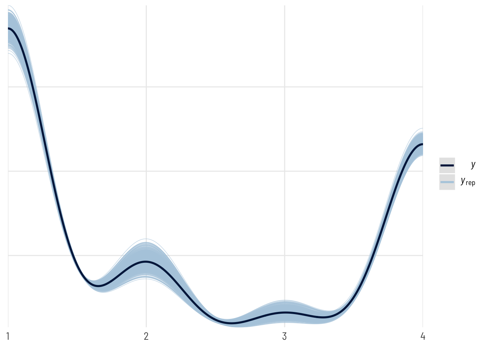

The purpose of this notebook is test the hypotheses that determined the design of the SGC3A study.
CODE
#UTILITIESlibrary(Hmisc) # %nin% operatorlibrary(broom) #tidy model outputlibrary(broom.mixed) #tidy mixed modelslibrary(mosaic) #favstatslibrary(svglite) #saving plots as svglibrary(distributional)#VISUALIZATION# library(ggpubr) #arrange plots# library(cowplot) #arrange shift function plotslibrary(ggformula) #easy graphs# # library(vcd) #mosaic plots# # library(vcdExtra) #mosaic plotslibrary(kableExtra) #printing tableslibrary(sjPlot) #visualize model coefficientslibrary(ggdist) #uncertainty vizlibrary(gghalves) # plots. in halflibrary(ggbeeswarm) # violin plot stuffslibrary(statsExpressions)library(ggstatsplot) #plots with statslibrary(modelsummary) #latex tables for models!#MODELLING# library(rstatix) #helpful testing functions incl wilcoxon, etclibrary(report) #easystats reportinglibrary(see) #easystats visualizationlibrary(performance) #easystats model diagnosticslibrary(parameters) #easystats model summary and vislibrary(insight)# library(qqplotr) #confint on qq plot# library(gmodels) #contingency table and CHISQRlibrary(equatiomatic) #extract model equation# library(pscl) #zeroinfl / hurdle models library(lme4) #mixed effects modelslibrary(lmerTest) #for CIs in glmerlibrary(merTools) #prediction intervalus for glmers # library(ggeffects) #visualization log regr models#MULTINOMIAL library(nnet) #multinomial logistic regression [not mixed] #no p valueslibrary(mclogit) #frequentist mixed multinomial logistic regression [mblogit] #gives p values#BAYESIANlibrary(cmdstanr) #executing stanlibrary(brms) #bayesian mixed multinomials [+ other bayesian reg models]library(bayestestR) library(modelr) #helping with tidybayeslibrary(tidybayes)library(tidyverse) #ALL THE THINGS#OUTPUT OPTIONSlibrary(dplyr, warn.conflicts =FALSE)options(dplyr.summarise.inform =FALSE)options(ggplot2.summarise.inform =FALSE)options(scipen=1, digits=3)#GRAPH THEMEING# theme_set(theme_minimal()) # Custom ggplot theme to make pretty plots# Get the font at https://fonts.google.com/specimen/Barlow+Semi+Condensedtheme_clean <-function() {theme_minimal(base_family ="Barlow Semi Condensed") +theme(panel.grid.minor =element_blank(),plot.title =element_text(family ="BarlowSemiCondensed-Bold"),axis.title =element_text(family ="BarlowSemiCondensed-Medium"),strip.text =element_text(family ="BarlowSemiCondensed-Bold",size =rel(1), hjust =0),strip.background =element_rect(fill ="grey80", color =NA))}set_theme(base =theme_clean())
Research Questions
In SGC3A we set out to answer the following question: Does posing a mental impasse improve performance on the interval graph comprehension task?
Experimental Hypothesis Learners posed with scenario designed to evoke a mental impasse will be more likely to correct interpret the graph.
H1A | Learners in the IMPASSE condition will score higher overall than learners in CONTROL.
H1B | Learners in the IMPASSE condition will be more likely to correctly answer the first question than learners in CONTROL.
Null Hypothesis No significant differences in performance will exist between learners in the IMPASSE and CONTROL conditions.
CODE
#IMPORT DATA df_subjects <-read_rds('analysis/SGC3A/data/2-scored-data/sgc3a_scored_participants_LAB.rds') %>%filter(mode =="lab-synch") %>%#only get lab-run participantsmutate(task_percent = DV_percent_NABS ) %>%droplevels()df_items <-read_rds('analysis/SGC3A/data/2-scored-data/sgc3a_scored_items_LAB.rds') %>%filter(subject %in% df_subjects$subject) %>%#only get lab-run participantsmutate (q =as.factor(q), subject =as.factor(subject),accuracy =recode_factor(score_niceABS, "0"="incorrect","1"="correct"),# CODES TVERSKY AS TRI-LIKE# state = recode_factor(score_SCALED, #for ordinal# "-1" = "orth-like",# "-0.5" = "unknown",# "0" = "unknown",# "0.5" = "tri-like",# "1" = "tri-like"),# CODES TVERSKY AS OTHERstate =recode_factor(score_SCALED, #for ordinal"-1"="orthogonal","-0.5"="other","0"="other","0.5"="angular","1"="triangular"),state =as.ordered(state))
SAMPLE
Data Collection
CODE
title ="Participants by Condition and Data Collection Period"cols =c("Control Condition","Impasse Condition","Total for Period")cont <-table(df_subjects$term, df_subjects$condition)cont %>%addmargins() %>%kbl(caption = title, col.names = cols) %>%kable_classic()
Participants by Condition and Data Collection Period
Control Condition
Impasse Condition
Total for Period
fall17
27
27
54
spring18
35
37
72
Sum
62
64
126
Participants
CODE
#Describe participantssubject.stats <-df_subjects %>% dplyr::select(age) %>%unlist() %>%favstats()subject.stats$percent.male <- ((df_subjects %>%filter(gender=="Male") %>%count())/count(df_subjects))$nsubject.stats$percent.female <- ((df_subjects %>%filter(gender=="Female") %>%count())/count(df_subjects))$nsubject.stats$percent.other <- ((df_subjects %>%filter(gender %nin%c("Female","Male")) %>%count())/count(df_subjects))$ntitle ="Descriptive Statistics of Participant Age and Gender"subject.stats %>%kbl (caption = title) %>%kable_classic()%>%footnote(general ="Age in Years", general_title ="Note: ",footnote_as_chunk = T)
Descriptive Statistics of Participant Age and Gender
min
Q1
median
Q3
max
mean
sd
n
missing
percent.male
percent.female
percent.other
18
19
20
21
33
20.4
2.12
126
0
0.373
0.619
0.008
Note: Age in Years
REPORTED
Overall 126 participants (37 % male, 62 % female, 1 % other) undergraduate STEM majors at a public American University participated in exchange for course credit (age: 18 - 33 years).
H1A | OVERALL ACCURACY
Research Question
Do Ss in the IMPASSE condition score higher across the entire task than those in the CONTROL group?
Hypothesis
(H1) Participants in the IMPASSE condition will be more likely to correctly interpret the graph than those in the CONTROL condition.
Data
data: df_items where q nin 6,9 (the 13 discriminating Qs ), df_subjects
[subject level]: accuracy (number of test phase qs correct from total s_NABS)
predictor: condition [between-subjects factor]
Analysis Strategy
Wilcoxon-Rank Sum (Mann-Whitney) test on subject-level total accuracy of test phase (s_NABS)
Mixed Logistic Regression accuracy ~ condition + (1 | subject ) + (1 | question)
model effect of condition on probability of correct response [during test phase] while accounting for subject (and item-level?) effects
Alternatives
Ordinal Mixed Logistic Regression on scaled_score
OLS Linear Regression: bimodal distribution at tails makes the mean a poor predictor; LMs violate assumptions of normally distributed residuals; both absolute and scaled scores yield non-normal residuals; no transformation of the outcome variables yield normal residuals
Notes
Also exploring:
Hurdle model (mixture model w/ binomial + [poisson or negbinom count; 0s from 1 DGP)
Zero Inflated model (mixture model w/ binomial + poisson or negbinom count; 0s from 2 DGPs)
Beta regression hurdle model? (mixture with location and scale parameters [mean, variance] and hurdles for floor and ceiling effects)
#:::::::: LABELLED temp <- df_i %>%mutate(accuracy =fct_rev(accuracy)) p <-ggbarstats(data = temp, x = accuracy, y = pretty_condition,results.subtitle =FALSE,ggplot.component =## modify further with `{ggplot2}` functionslist(scale_fill_manual(values = paletteer::paletteer_d("lisa::FridaKahlo", 2))# theme(axis.text.x = element_text(angle = 90))) )) +theme_clean() +theme(legend.position ="bottom")
Scale for 'fill' is already present. Adding another scale for 'fill', which
will replace the existing scale.
CODE
p <- p +labs(title ="DISTRIBUTION | Question Accuracy",y ="Proportion of Questions", x ="Condition",subtitle ="Impasse condition yields more correct responses")p
title ="Descriptive Statistics of Response Accuracy (Total % Correct)"tbl1 <- mosaic::favstats(~task_percent, data = df_s) tbl1 %>%kbl (caption = title) %>%kable_classic()
Descriptive Statistics of Response Accuracy (Total % Correct)
min
Q1
median
Q3
max
mean
sd
n
missing
0
0
0.077
0.692
1
0.316
0.392
126
0
CODE
title ="Descriptive Statistics of Response Accuracy (Total % Correct) BY CONDITION"tbl2 <- mosaic::favstats(task_percent ~ pretty_condition, data = df_s) tbl2 %>%kbl (caption = title) %>%kable_classic()
Descriptive Statistics of Response Accuracy (Total % Correct) BY CONDITION
pretty_condition
min
Q1
median
Q3
max
mean
sd
n
missing
control
0
0.000
0.000
0.154
1
0.210
0.370
62
0
impasse
0
0.058
0.346
0.846
1
0.419
0.387
64
0
CODE
#::::::::::::DESCRIPTIVEStitle ="Descriptive Statistics of Item Accuracy (Total % Correct) BY CONDITION"table(df_i$accuracy, df_i$pretty_condition) %>%addmargins(2) %>%#display sum for rowprop.table(margin=2) %>%#return proportion (of column)addmargins(1) %>%#sanity check sum of columnskbl(caption = title) %>%kable_classic()
Descriptive Statistics of Item Accuracy (Total % Correct) BY CONDITION
control
impasse
Sum
incorrect
0.79
0.581
0.684
correct
0.21
0.419
0.316
Sum
1.00
1.000
1.000
WILCOXON RANK SUM (Mann-Whitney Test)
Non parametric alternative to t-test; compares median rather than mean by ranking data
Does not assume normality
Does not assume equal variance of samples (homogeneity of variance)
Test
CODE
(w <-wilcox.test(df_s$task_percent ~ df_s$pretty_condition,paired =FALSE, alternative ="less")) #less, greater
Wilcoxon rank sum test with continuity correction
data: df_s$task_percent by df_s$pretty_condition
W = 1243, p-value = 7e-05
alternative hypothesis: true location shift is less than 0
CODE
report(w)
Effect sizes were labelled following Funder's (2019) recommendations.
The Wilcoxon rank sum test with continuity correction testing the difference in ranks between df_s$task_percent and df_s$pretty_condition suggests that the effect is negative, statistically significant, and large (W = 1243.00, p < .001; r (rank biserial) = -0.37, 95% CI [-1.00, -0.22])
Inference
Because the distribution of the outcome variable is not normally distributed, we evaluate the effect of CONDITION on ACCURACY via a non-parametric test. Consistent with our hypothesis, a Wilcoxon rank sum test (with continuity correction) on ACCURACY by CONDITION indicates that data in each condition likely come from different population distributions (W = 1243, p < 0.001; one-tailed), and that the distribution of the control condition is less (i.e. shifted to the left/ lower scores) than the impasse condition (^{r} = -0.37, 95% CI [-1.00, -0.22]), a large-sized effect.
Visualize
CODE
ggbetweenstats( x = pretty_condition, y = task_percent, data = df_s,type ="nonparametric", var.equal =FALSE)
MIXED LOGISTIC REGRESSION
Fit a mixed logistic regression (at the item level), predicting accuracy (absolute score) on all discriminating questions by condition; accounting for random effects of subject and item.
#confirm all factors is.factor(df_i$q) &&is.factor(df_i$subject) &&is.factor(df_i$pretty_condition) &&is.factor(df_i$accuracy)
[1] TRUE
CODE
## 1 | SETUP RANDOM INTERCEPT SUBJECT#:: EMPTY MODEL (baseline, no random effect)print("Empty fixed model")
[1] "Empty fixed model"
CODE
m0 =glm(accuracy ~1, family ="binomial", data = df_i) # summary(m0)#:: RANDOM INTERCEPT SUBJECTprint("Subject intercept random model")
[1] "Subject intercept random model"
CODE
mm.rS <-glmer(accuracy ~ (1|subject), data = df_i, family ="binomial")# summary(mm.rS)# :: TEST random effectpaste("AIC decreases w/ new model?", m0$aic >AIC(logLik(mm.rS)))
[1] "AIC decreases w/ new model? TRUE"
CODE
test_lrt(m0,mm.rS) #same as anova(m0, m1, test = "Chi")
# Likelihood-Ratio-Test (LRT) for Model Comparison (ML-estimator)
Name | Model | df | df_diff | Chi2 | p
--------------------------------------------------
m0 | glm | 1 | | |
mm.rS | glmerMod | 2 | 1 | 1011.83 | < .001
CODE
paste("Likelihood Ratio test is significant? p = ",(test_lrt(m0,mm.rS))$p[2])
[1] "Likelihood Ratio test is significant? p = 4.82063151679782e-222"
CODE
#:: RANDOM INTERCEPT SUBJECT + ITEMprint("Subject Intercept + Item intercept random model")
[1] "Subject Intercept + Item intercept random model"
CODE
mm.rSQ <-glmer(accuracy ~ (1|subject) + (1|q), data = df_i, family ="binomial")#summary(mm.rSQ)# :: TEST random effectpaste("AIC decreases w/ new model?", AIC(logLik(mm.rS)) >AIC(logLik(mm.rSQ)))
[1] "AIC decreases w/ new model? TRUE"
CODE
test_lrt(mm.rS, mm.rSQ) #same as anova(m0, m1, test = "Chi")
Some of the nested models seem to be identical and probably only vary in
their random effects.
# Likelihood-Ratio-Test (LRT) for Model Comparison (ML-estimator)
Name | Model | df | df_diff | Chi2 | p
-------------------------------------------------
mm.rS | glmerMod | 2 | | |
mm.rSQ | glmerMod | 3 | 1 | 15.82 | < .001
CODE
paste("Likelihood Ratio test is significant? p = ",(test_lrt(mm.rS, mm.rSQ))$p[2])
Some of the nested models seem to be identical and probably only vary in
their random effects.
[1] "Likelihood Ratio test is significant? p = 0.0000697594950188617"
[1] "FIXED Condition + Subject & Item random intercepts"
CODE
mm.CrSQ <-glmer(accuracy ~ pretty_condition + (1|subject) + (1|q) ,data = df_i, family ="binomial")#summary(mm.CrSQ)paste("AIC decreases w/ new model", AIC(logLik(mm.rSQ)) >AIC(logLik(mm.CrSQ)) )
[1] "AIC decreases w/ new model TRUE"
CODE
test_lrt(mm.rSQ,mm.CrSQ) #same as anova(m0, m1, test = "Chi")
# Likelihood-Ratio-Test (LRT) for Model Comparison (ML-estimator)
Name | Model | df | df_diff | Chi2 | p
--------------------------------------------------
mm.rSQ | glmerMod | 3 | | |
mm.CrSQ | glmerMod | 4 | 1 | 18.66 | < .001
CODE
paste("Likelihood Ratio test is significant? p = ",(test_lrt(mm.rSQ,mm.CrSQ))$p[2])
[1] "Likelihood Ratio test is significant? p = 0.0000156066263742927"
CODE
# control = glmerControl(optimizer="bobyqa", optCtrl=list(maxfun=2e5)))
A likelihood ratio test indicates adding CONDITION as a fixed effect to a logistic regression model including a fixed effect random intercepts for SUBJECT and QUESTION explains more variance in the data than random-effects only model.
Describe
CODE
#::::::::: SETUPm <- mm.CrSQ#::::::::: PRINT MODEL print("PREDICTOR MODEL")
[1] "PREDICTOR MODEL"
CODE
summary(m)
Generalized linear mixed model fit by maximum likelihood (Laplace
Approximation) [glmerMod]
Family: binomial ( logit )
Formula: accuracy ~ pretty_condition + (1 | subject) + (1 | q)
Data: df_i
AIC BIC logLik deviance df.resid
1006 1028 -499 998 1634
Scaled residuals:
Min 1Q Median 3Q Max
-3.316 -0.136 -0.052 0.168 5.522
Random effects:
Groups Name Variance Std.Dev.
subject (Intercept) 22.216 4.713
q (Intercept) 0.308 0.555
Number of obs: 1638, groups: subject, 126; q, 13
Fixed effects:
Estimate Std. Error z value Pr(>|z|)
(Intercept) -5.51 1.02 -5.40 6.5e-08 ***
pretty_conditionimpasse 4.32 1.12 3.87 0.00011 ***
---
Signif. codes: 0 '***' 0.001 '**' 0.01 '*' 0.05 '.' 0.1 ' ' 1
Correlation of Fixed Effects:
(Intr)
prtty_cndtn -0.802
#:::::::: MANUAL ONE-SIDED SIGTEST #note: anova and chi square are always one-tailed, but that is independent of being one-sided#https://www.ibm.com/support/pages/can-one-get-one-tailed-tests-logistic-regression-dividing-significance-levels-half# one-sided (right tail) z test for B COEFFICIENT#SANITY CHECK 2-tailed test should match the model output# tt <- 2*pnorm(summary(m)$coefficients[2,3], lower.tail = F)# paste("p value for two-tailed test, null B = 0 : ",round(tt,5))# ot <- pnorm(summary(m)$coefficients[2,3], lower.tail = F)# paste("BUT we want a one directional, null: B <= 0: ",round(ot,5))#:::::::: INTERPRET COEFFICIENTSpaste("LOG ODDS")
# A tibble: 4 9
effect group term estimate std.error statistic p.value conf.low conf.high
<chr> <chr> <chr> <dbl> <dbl> <dbl> <dbl> <dbl> <dbl>
1 fixed <NA> (Int -5.51 1.02 -5.40 6.49e-8 -7.51 -3.51
2 fixed <NA> pret 4.32 1.12 3.87 1.08e-4 2.14 6.51
3 ran_pars subje sd__ 4.71 NA NA NA NA NA
4 ran_pars q sd__ 0.555 NA NA NA NA NA
# A tibble: 4 9
effect group term estimate std.error statistic p.value conf.low conf.high
<chr> <chr> <chr> <dbl> <dbl> <dbl> <dbl> <dbl> <dbl>
1 fixed <NA> (Int 0.00406 0.00413 -5.40 6.49e-8 5.50e-4 0.0299
2 fixed <NA> pret 75.5 84.3 3.87 1.08e-4 8.46e+0 674.
3 ran_pars subje sd__ 4.71 NA NA NA NA NA
4 ran_pars q sd__ 0.555 NA NA NA NA NA
CODE
paste("PROBABILITIES")
[1] "PROBABILITIES"
CODE
#probability control = plogis(intercept)#probability impasse = plogis(intercept + coefficient)#FROM predict()# newdata <- df_i %>% dplyr::select(pretty_condition, subject, q)# preds <- predict(m, newdata = newdata, type = "response")# preds <- cbind(newdata, preds)# p <- preds %>% # dplyr::select(pretty_condition, preds) %>% # group_by(pretty_condition) %>% # summarise(# median = median(preds),# se = sd(preds)/sqrt(n()),# lwr = median - 1.96*se,# upr = median + 1.96*se)#FROM merTools#setup df newdata <- df_i %>% dplyr::select(pretty_condition, subject, q)#make predictionspreds <-predictInterval(m, newdata = newdata,which ="fixed", #full, fixed or random for those onlytype ="probability", #linear.predictionstat ="median",n.sims =1000,level =0.80) #width of prediction interval
Warning: executing %dopar% sequentially: no parallel backend registered
CODE
#join predictions to the new dataframepreds <-cbind(newdata, preds)#summarize(summ_preds <- preds %>% dplyr::select(pretty_condition, fit, lwr, upr) %>%group_by(pretty_condition) %>%summarise(median =median(fit),lower =median(lwr),upper =median(upr) ))
# A tibble: 2 4
pretty_condition median lower upper
<fct> <dbl> <dbl> <dbl>
1 control 0.00401 0.000623 0.0240
2 impasse 0.237 0.0625 0.590
INFERENCE
(In Dissertation)
We fit a mixed effects binomial logistic regression model with random intercepts for subjects and questions. Note that we choose to model these data at the item (i.e. question) rather than than subject (i.e. total score) level because the structure of a mixed effects model allows us to differentiate between random variance introduced by individual subjects and questions, versus the expected systematic variance of CONDITION. A likelihood ratio test indicates that a model including a fixed effect of CONDITION explains significantly more variance in the data than an intercepts-only baseline model (\(\chi^2 (3) = 18.66, p < 0.001\)). The explanatory power of the entire model is substantial (\(conditional \ R^2 = 0.89\)) and the part related to the fixed effect CONDITION (\(marginal \ R^2\)) explains 15% of variance. Consistent with our hypothesis, the impasse condition substantially increases the odds of a correct response. Across the entire task participants in the impasse condition were 75 times more likely to offer a correct response, compared with those in the control condition ( \(e^{\beta_1} = 75.51, p < 0.001\), \(95 \% \ CI [8.46, 674]\)). Based on the fixed effect of CONDITION, The model predicts that the probability of a correct response in the control condition is effectively 0% (95% CI [6.8e-4, 0.02]), and the probability of a correct response in the impasse condition increases to 24% (95% CI [0.06, 0.60]).
## | PLOT PARAMETERS #SJPLOT | MODEL | lOG ODDSplot_model(m, transform =NULL,vline.color ="red", show.intercept =TRUE, show.values =TRUE,p.threshold =0.05, #manually adjust to account for directional testci.lvl =0.95 ) +#manually adjusted for directional test labs(title ="Model ESTIMATE | Odds Ratio",subtitle ="",x ="Condition")
CODE
#SJPLOT | MODEL | ODDS RATIOplot_model(m, transform ="exp",vline.color ="red", show.intercept =TRUE, show.values =TRUE,p.threshold =0.05, #manually adjust to account for directional testci.lvl =0.95 ) +#manually adjusted for directional test labs(title ="Model ESTIMATE | Log Odds",subtitle ="",x ="Condition")
CODE
#EASYSTATS | MODEL | ODDS RATIO# result <- model_parameters(m, exponentiate = TRUE, component = "all")# plot(result) + labs(# title = "Model ESTIMATE | ODDS RATIO"# )## | PLOT TESTS# result <- equivalence_test(m, rule = "classic", ci=0.9) #classic[tost], , bayes# plot(result)## | PLOT PREDICTIONS#SJPLOT | MODEL | PROBABILITIES# plot_model(m, type="eff",# show.intercept = TRUE,# show.values = TRUE,# title = "Model Prediction | Probability of Accurate Response",# axis.title = c("Condition","Probability of Accurate Response"))#GGDIST | MODEL | PREDICTED PROBABILITIESpreds %>%ggplot(aes( x = fit, y = pretty_condition, fill = pretty_condition)) +stat_halfeye(alpha =0.5, normalize ="xy") +xlim(0,0.3) +theme_clean() +labs(title ="Model PREDICTION | Probability of Accurate Response",subtitle ="TODO check preds to see if fixed or includes random" )
CODE
# SIMULATE FIXED EFFECTS# simulate values of fixed effects # (feEx <- FEsim(m, oddsRatio = FALSE, n.sims = 1000))# PLOT estimates of fixed effects# plotFEsim(feEx) +# theme_bw() + labs(title = "Coefficient Plot of InstEval Model",# x = "Median Effect Estimate")# SIMULATE RANDOM EFFECTS# simulate values of random effects# reEx <- REsim(m)# PLOT estimates of random effects# plotREsim(reEx)
CODE
#SJPLOT | MODEL | PROBABILITIESp <-plot_model(m, type ="pred")[[1]] +ylim(0,1) +labs(title ="Model PREDICTION | Probability of Correct Response",subtitle ="Impasse increases probability of correct response",y ="Probability of Correct Response", x ="Condition" )
Scale for 'y' is already present. Adding another scale for 'y', which will
replace the existing scale.
A likelihood ratio test indicates adding CONDITION as a fixed effect to a logistic regression model including a fixed effect random intercepts for SUBJECT and QUESTION explains more variance in the data than random-effects only model.
CODE
# #::::: GGDIST POSTERIOR PROBABILITY OF RESPONSE# ##WORKING# ## VIS probability of correct response# #TAKES A REALLY LONG TIME# # #1 | get draws# draws <- df_i %>%# data_grid(pretty_condition, subject, q) %>%# add_fitted_draws(Bmm.CrSQ,# # n = 100,# # dpar = TRUE,# # transform = TRUE, #gives prob%, otherwise OR# re_formula = NA)# # draws %>% write_rds(file = "analysis/SGC3A/models/draws/draws_BB.catCrSQ.rds")# # #OR load from file# # draws <- read_rds("analysis/SGC3A/models/draws_BB.catCrSQ.rds")# # #2| VISUALIZE PREDICTIONS | GGDIST# ##TODO figure out height normalization.# ##do it with much smaller number of draws # #TODO adjust bandwidth/smoothing? + put on same line + # #TAKES A REAAALY LONG TIME# # draws %>% sample_n(1000) %>% # # ggplot(aes(x = .value, y = 0, fill = pretty_condition)) +# # stat_slab(width = c(.95), alpha = 1, normalize="xy") +# # #normalize = all, panels, xy, groups, none# # xlim(0,1) + labs(# # title = "Model Predicted Probability of Correct Response",# # x = "probability of correct response",# # y = "Interpretation"# # ) + theme_clean() #+ ggeasy::easy_remove_legend() + ggeasy::easy_remove_y_axis()# # #TO PLOT ON THE SAME LINE, INCLUDE Y = 0 in aes and ggeasy::remove_y_axis()
H1A | OVERALL INTERPRETATION STATE
Do Ss in the IMPASSE condition offer less-orthogonal interpretations across the test phase questions?
While absolute accuracy score tells us whether a participant successfully interpreted the coordinate system, it doesnt allow us to differentiate between different kinds of incorrect interpretations. Here we examine the (categorical) interpretation state type based on the nature of subjects response, and determine if these interpretations differ by experimental condition. State is a 3-category variable that groups the following interpretations:
orthogonal [reference category] includes orthogonal and satisficing responses ==> indicates a primarily orthogonal state of coordinate system understanding
other includes: blank, reference point, responses that cant be classified (including selecting all datapoints), => indicates an uncertain or unidentifiable state of coordinate system understanding, but one that is distinctly not orthogonal nor triangular
angular includes lines connecting responses as well as responses that include both orthogonal and triangular answers => indicates some degree of angular/triangular coordinate understanding
triangular includes correct triangular and lines connecting responses as well as responses that include both orthogonal and triangular answers => indicates some degree of angular/triangular coordinate understanding
Research Question
Does Ss in the impasse condition produce less orthogonal responses across questions?
Hypothesis
H1A | Ss in the IMPASSE condition will have a higher likelihood of producing unknown and triangle-like response states across all items
Data
data: df_items where q nin 6,9 (13 discriminant test phase items)
outcome: state ( 3 level factor from high_interpretation )
predictor: condition [between-subjects factor]
Analysis Strategy
MIXED Multinomial (Logistic) Regression on state predicted by condition
Alternative:
MIXED Ordinal regression on state (doesnt meet proportional odds assumption-I think)
MIXED Multinomial or Ordinal regression on high_interpretation (some cells are 0, produces problems)
#:::::::: LABELLED temp <- df_i %>%mutate(state =fct_rev(state)) p <-ggbarstats(data = temp, x = state, y = pretty_condition,results.subtitle =FALSE,ggplot.component =## modify further with `{ggplot2}` functionslist(scale_fill_manual(values = paletteer::paletteer_d("ggthemes::calc", 4))# theme(axis.text.x = element_text(angle = 90))) )) +theme_clean() +theme(legend.position ="bottom")
Scale for 'fill' is already present. Adding another scale for 'fill', which
will replace the existing scale.
CODE
p <- p +labs(title ="DISTRIBUTION | Question Accuracy",y ="Proportion of Questions", x ="Condition",subtitle ="Impasse condition yields more correct responses")p
A proportional bar chart visualizing the proportion of each interpretations type by condition for each data collection modality (left/right facet) reveals that the pattern of responses are similar regardless of the data collection modality, by differ by condition. In the impasse condition, there are more triangular responses than in control. In the impasse condition, there are also more positive transition (i.e. triangle-like) and neutral (ie. blank or uncertain response types) than in the control condition.
Describe
CODE
#::::::::::::DESCRIPTIVEStable(df_i$state, df_i$pretty_condition) %>%addmargins(2) %>%#display sum for rowprop.table(margin=2) %>%#return proportion (of column)addmargins(1) #sanity check sum of columns
control impasse Sum
orthogonal 0.6973 0.3353 0.5134
other 0.0707 0.1839 0.1282
angular 0.0124 0.0373 0.0250
triangular 0.2196 0.4435 0.3333
Sum 1.0000 1.0000 1.0000
CODE
(t <-table(df_i$state, df_i$pretty_condition) %>%addmargins(2) %>%#display sum for rowaddmargins(1)) #sanity check sum of columns
control impasse Sum
orthogonal 562 279 841
other 57 153 210
angular 10 31 41
triangular 177 369 546
Sum 806 832 1638
MIXED MULTINOMIAL REGRESSION
Does condition affect the response state of of items across the task?
Fit a MIXED logistic regression predicting interpretation state (k=3) by condition(k = 2).
Can use mclogit mblogit() with random effect or bayesian brms package b/c nlme, lme4 dont support random effects on multinomial (ie no categorical family on glmer())
Alternative would be to manually run [k-1] X binomial mixed models [should compare outcomes]
[k-1] equations will be estimated (# categories - 1); each representing the odds of answering in that particular interpretation (vs) the reference category (orthogonal answer) [essentially a series of binary logistic regressions, but instead of incorrect/correct, comparing [reference category] vs [this category])
For each equation:
\(\beta_{0}\)= Log Odds of [this category type vs. reference category type) response in CONTROL condition
\(e^{\beta_{0}}\)= ODDS of [this category type vs. reference category type] response in CONTROL condition
\(\beta_{1}\)=\(\beta_{1impasse}\)Log Odds (Log OR; change in odds for [this category] type response in impasse (vs) control [log scale])
\(e^{\beta_{1}}\)= ODDS RATIO of [this. vs reference category type] response in IMPASSE (vs) CONTROL
Two-tailed NHST Null hypothesis:\(\beta_{impasse} = 0\)the odds for [this category of response vs. reference] are not different for IMPASSE condition
Alternative hypothesis:\(\beta_{impasse} \ne 0\)the odds of [this category of response vs. reference] increases or decreases for IMPASSE condition
Fit Model [brms]
CODE
#BAYESIAN RANDOM ONLYBmm.cat.rSQ <-brm( state ~1+ (1|subject) + (1|q), data = df_i, family ="categorical",chains =4, iter =2500, warmup =1000,cores =4, seed =1234,save_pars =save_pars(all =TRUE),# backend = "cmdstanr",file ="analysis/SGC3A/models/sgc3a_brms_state_Bmm.cat.rSQ_LAB.rds")#UNINFORMATIVE PRIOR BAYESIAN MIXED VERSION# flat_Bmm.cat.CrSQ <- brm( state ~ pretty_condition + (1|subject) + (1|q), # data = df_i, # family = "categorical",# chains = 4, iter = 2500, warmup = 1000,# cores = 4, seed = 1234,# save_pars = save_pars(all = TRUE),# # backend = "cmdstanr",# file ="analysis/SGC3A/models/sgc3a_brms_state_FLAT_Bmm.cat.CrSQ_LAB.rds")# determine default priors # prior_summary(flat_Bmm.cat.CrSQ)#set priors [see justification, below]inf_priors <-c(# too strong?# prior(normal(-6.91, 0.201), class = "Intercept", dpar = "muangular"),# prior(normal(-6.91, 0.201), class = "Intercept", dpar = "muother"),# prior(normal(-6.91, 0.201), class = "Intercept", dpar = "mutriangular"),#prior on INTERCEPTS #25% chance of each answer in control, scale = from 0.01 to 62%prior(normal(-1.1, 1.5), class ="Intercept", dpar ="muangular"),prior(normal(-1.1, 1.5), class ="Intercept", dpar ="muother"),prior(normal(-1.1, 1.5), class ="Intercept", dpar ="mutriangular"),#prior on COEFFICIENT#likely to change odds between 0 and 2.4prior(normal(0, 2.42), class = b, coef="pretty_conditionimpasse", dpar ="muangular"),prior(normal(0, 2.42), class = b, coef="pretty_conditionimpasse", dpar ="muother"),prior(normal(0, 2.42), class = b, coef="pretty_conditionimpasse", dpar ="mutriangular"))#INFORMATIVE PRIORSBmm.cat.CrSQ <-brm( state ~ pretty_condition + (1|subject) + (1|q), data = df_i, family ="categorical",prior = inf_priors,chains =4, iter =2500, warmup =1000,cores =4, seed =1234,save_pars =save_pars(all =TRUE),control =list(adapt_delta =0.98), # to deal with divergent transitions# backend = "cmdstanr",file ="analysis/SGC3A/models/sgc3a_brms_state_Bmm.cat.CrSQ_LAB.rds" )#a bayes factor model comparison of the flat vs informative prior models suggest convicing evidence that #informative prior model is a better fit# bayesfactor(Bmm.cat.CrSQ, flat_Bmm.cat.CrSQ)# PRIORS LOGIC # https://www.bayesrulesbook.com/chapter-13.html#building-the-logistic-regression-model#expectation for probability of _better_ response [in control]?#very low probability center: 0.1% [very low]; as logodds = logit(0.001) = -6.91#range from 0 to 55% logit(0.55) = 0.201#probability of 0.1 to 55% is equivalent to [logodds] -6.91 +/ 2* 0.201#therefore... prior for intercept => Normal(6.91, 0)#expectation for probability of _better_ response [in impasse]?#increases probablity from 0 % # 0 [very low]; as OR = exp(0) = 1#range from 0 to 90% exp(0.9) = 2.46#probability of 0 to 90% is equivalent to [ODDS scale] 1 +/ 2* 2.42#on log odds scale ? [0, ]#therefore... prior for intercept => Normal(1, 2.42)# prior = normal(0.07, 0.035),
Describe
CODE
# best model# m <- Bmm.cat.CrSQm <- Bmm.cat.CrSQ#::::::::: PRINT MODEL print("PREDICTOR MODEL")
[1] "PREDICTOR MODEL"
CODE
summary(m)
Family: categorical
Links: muother = logit; muangular = logit; mutriangular = logit
Formula: state ~ pretty_condition + (1 | subject) + (1 | q)
Data: df_i (Number of observations: 1638)
Draws: 4 chains, each with iter = 2500; warmup = 1000; thin = 1;
total post-warmup draws = 6000
Group-Level Effects:
~q (Number of levels: 13)
Estimate Est.Error l-95% CI u-95% CI Rhat Bulk_ESS
sd(muother_Intercept) 1.34 0.35 0.81 2.13 1.00 1831
sd(muangular_Intercept) 1.90 0.65 0.97 3.51 1.00 1764
sd(mutriangular_Intercept) 0.91 0.25 0.53 1.49 1.00 1733
Tail_ESS
sd(muother_Intercept) 3004
sd(muangular_Intercept) 3446
sd(mutriangular_Intercept) 2945
~subject (Number of levels: 126)
Estimate Est.Error l-95% CI u-95% CI Rhat Bulk_ESS
sd(muother_Intercept) 1.33 0.19 0.99 1.72 1.00 2070
sd(muangular_Intercept) 1.91 0.43 1.12 2.79 1.00 1036
sd(mutriangular_Intercept) 4.49 0.49 3.63 5.57 1.00 1416
Tail_ESS
sd(muother_Intercept) 3510
sd(muangular_Intercept) 703
sd(mutriangular_Intercept) 2950
Population-Level Effects:
Estimate Est.Error l-95% CI u-95% CI Rhat
muother_Intercept -3.16 0.44 -4.07 -2.31 1.00
muangular_Intercept -5.49 0.78 -7.06 -3.99 1.00
mutriangular_Intercept -3.61 0.71 -5.03 -2.26 1.00
muother_pretty_conditionimpasse 2.40 0.35 1.72 3.11 1.00
muangular_pretty_conditionimpasse 2.41 0.62 1.27 3.70 1.00
mutriangular_pretty_conditionimpasse 3.53 0.87 1.85 5.27 1.00
Bulk_ESS Tail_ESS
muother_Intercept 1115 2557
muangular_Intercept 1984 3058
mutriangular_Intercept 1363 2495
muother_pretty_conditionimpasse 2429 3872
muangular_pretty_conditionimpasse 3605 4066
mutriangular_pretty_conditionimpasse 1018 1925
Draws were sampled using sampling(NUTS). For each parameter, Bulk_ESS
and Tail_ESS are effective sample size measures, and Rhat is the potential
scale reduction factor on split chains (at convergence, Rhat = 1).
CODE
(d <-describe_posterior(ci=.95, Bmm.cat.CrSQ))
Possible multicollinearity between b_mutriangular_pretty_conditionimpasse and b_mutriangular_Intercept (r = 0.71). This might lead to inappropriate results. See 'Details' in '?rope'.
#think of this like the anova(model) to get p values for each predictor#has to recompile the models with rstan. total drag(b <-bayesfactor(Bmm.cat.rSQ, m))
Warning: Bayes factors might not be precise.
For precise Bayes factors, sampling at least 40,000 posterior samples is recommended.
Computation of Bayes factors: estimating marginal likelihood, please wait...
Warning: logml could not be estimated within maxiter, rerunning with adjusted starting value.
Estimate might be more variable than usual.
Warning: logml could not be estimated within maxiter, rerunning with adjusted starting value.
Estimate might be more variable than usual.
Bayes Factors for Model Comparison
Model BF
[2] pretty_condition + (1 | subject) + (1 | q) 1.07e+13
* Against Denominator: [1] 1 + (1 | subject) + (1 | q)
* Bayes Factor Type: marginal likelihoods (bridgesampling)
CODE
print("DESCRIBE POSTERIOR")
[1] "DESCRIBE POSTERIOR"
CODE
#:::::::: INTERPRET COEFFICIENTS# se <- sqrt(diag(stats::vcov(m)))# # table of estimates with 95% CI# (tab <- cbind(Est = fixef(m),# LL = fixef(m) - 1.96 * se,# UL = fixef(m) + 1.96 * se))paste("LOG ODDS")
[1] "LOG ODDS"
CODE
(l <-describe_posterior(m))
Possible multicollinearity between b_mutriangular_pretty_conditionimpasse and b_mutriangular_Intercept (r = 0.71). This might lead to inappropriate results. See 'Details' in '?rope'.
Possible multicollinearity between b_mutriangular_pretty_conditionimpasse and b_mutriangular_Intercept (r = 0.71). This might lead to inappropriate results. See 'Details' in '?rope'.
##DRAWS METHOD# GENERATE draws from model# draws <- df_i %>%# data_grid(pretty_condition, subject, q) %>% # add_fitted_draws(Bmm.cat.CrSQ,# # n = 100,# # dpar = TRUE,# # transform = TRUE, #gives prob%, otherwise OR# re_formula = NA)# # draws %>% write_rds(file = "analysis/SGC3A/models/draws/draws_BB.catCrSQ.rds")# # #OR load from file# # draws <- read_rds(file = "analysis/SGC3A/models/draws/draws_BB.catCrSQ.rds")# # # SUMMARIZE draws from model# (k <- kable(draws %>%# dplyr::select(pretty_condition, .category, .value) %>%# group_by(pretty_condition, .category) %>%# median_hdci(.value), digits = 4, col.names =# c("Condition","Category", "Probability","Lower Cred.I","Upper Cred.I", "CI Width", "Point Type", "Interval Type")) %>%# kable_styling())##EASY STATS INSIGHT # https://easystats.github.io/insight/reference/get_predicted.html# p <- get_predicted(m, predict = "expectation")
INFERENCE
REPORTED
[REPORT POSTERIOR MEDIAN \(\exp_{beta}\), 95 % credible interval, % probability of direction]
We fit a (bayesian) multinomial logistic regression model with random intercepts for subjects and questions. A Bayes Factor model comparison (against a random intercepts-only model) indicates extreme evidence for a main effect of CONDITION (BF = 9.31e+15). Consistent with our hypothesis, the impasse condition substantially increases the odds of transitional interpretations.
Across the entire task participants in the impasse condition were 11 times more likely to offer an unknown rather than orthogonal response compared with those in the control condition ( \(e^{\beta_1} = 10.93, 95 \% CI [5.59,22.49], pd = 100\%\)). Participants in the impasse condition were 11 times more likely to offer an angular rather than orthogonal response compared with those in the control condition ( \(e^{\beta_1} = 10.93, 95 \% CI [3.55, 40.54], pd = 100\%\)), and 33 times more likely to offer an triangular rather than orthogonal response compared with those in the control condition ( \(e^{\beta_1} = 33.38, 95 \% CI [6.36, 194.83], pd = 100\%\)).
Possible multicollinearity between b_mutriangular_pretty_conditionimpasse and b_mutriangular_Intercept (r = 0.71). This might lead to inappropriate results. See 'Details' in '?rope'.
Possible multicollinearity between b_mutriangular_pretty_conditionimpasse and b_mutriangular_Intercept (r = 0.71). This might lead to inappropriate results. See 'Details' in '?equivalence_test'.
Possible multicollinearity between b_mutriangular_pretty_conditionimpasse and b_mutriangular_Intercept (r = 0.71). This might lead to inappropriate results. See 'Details' in '?rope'.
CODE
plot(result)
CODE
(result <-pd(m,exponentiate =TRUE))
Probability of Direction
Parameter | pd
-------------------------------------------
muother_Intercept | 100%
muangular_Intercept | 100%
mutriangular_Intercept | 100%
muother_pretty_conditionimpasse | 100%
muangular_pretty_conditionimpasse | 100%
mutriangular_pretty_conditionimpasse | 100%
## | PLOT PREDICTIONS#SJPLOT | MODEL | PROBABILITIES# plot_model(m, type="eff",# show.intercept = TRUE,# show.values = TRUE,# title = "Model Prediction | Probability of Accurate Response",# axis.title = c("Condition","Probability of Accurate Response"))# #PLOT MODEL PREDICTIONplot_model(m, type ="pred",title ="Model PREDICTION | Probability of Response Interpretation",axis.title =c("Condition", "Probability of Response Interpretation"))
Note: uncertainty of error terms are not taken into account. You may want to use `rstantools::posterior_predict()`.
$pretty_condition
CODE
# TODO EMMEANS for the estimated marginal means#TODO OUTPUT TABLE # modelsummary(m)
CODE
#::::: GGDIST POSTERIOR PROBABILITY OF RESPONSE##WORKING# https://mjskay.github.io/ggdist/reference/stat_slab.html## VIS probability of correct response#TAKES A REALLY LONG TIME#1 | get drawsdraws <- df_i %>%data_grid(pretty_condition, subject, q) %>%add_fitted_draws(Bmm.cat.CrSQ,# n = 100,# dpar = TRUE,# transform = TRUE, #gives prob%, otherwise ORre_formula =NA)
Warning: `fitted_draws` and `add_fitted_draws` are deprecated as their names were confusing.
Use [add_]epred_draws() to get the expectation of the posterior predictive.
Use [add_]linpred_draws() to get the distribution of the linear predictor.
For example, you used [add_]fitted_draws(..., scale = "response"), which
means you most likely want [add_]epred_draws(...).
CODE
# draws %>% write_rds(file = "analysis/SGC3A/models/draws/draws_BB.catCrSQ.rds")#OR load from file# draws <- read_rds(file = "analysis/SGC3A/models/draws/draws_BB.catCrSQ.rds")#2| VISUALIZE PREDICTIONS | GGDIST##TODO figure out height normalization.##do it with much smaller number of draws #TODO adjust bandwidth/smoothing? + put on same line + #TAKES A REAAALY LONG TIMEd <- draws %>%sample_n(10) %>%ggplot(aes(x = .value, y = .category, fill = pretty_condition)) +stat_slab(width =c(.95), alpha =0.5, normalize="xy") +# stat_halfeye(.width = c(.95), alpha = .6,interval_alpha = 0,point_alpha = 0, normalize = "groups") +# #normalize = all, panels, xy, groups, nonexlim(0,1) +labs(title ="Model Predicted Probability of Correct Response",x ="probability of correct response",y ="Interpretation" ) +theme_clean() #+ ggeasy::easy_remove_legend() + ggeasy::easy_remove_y_axis()# # #TO PLOT ON THE SAME LINE, INCLUDE Y = 0 in aes and ggeasy::remove_y_axis()# # # # ggsave(d, filename = "figures/sgc3a_BBm.cat.CrSQ_lab_posterior.svg", width = 6, height =4)d
Diagnostics
CODE
#CHECK Fit of posterior predictive to datapp_check(Bmm.cat.CrSQ, ndraws=1000)

CODE
#CHECK posterior vs. priorsresult <-estimate_density(Bmm.cat.CrSQ)plot(result, stack =FALSE, priors=TRUE)
CODE
#CHECK modelplot(Bmm.cat.CrSQ)
Fit Model [mblogit]
CODE
# # #https://www.elff.eu/software/mclogit/manual/mblogit/# #"baseline category logit" model matches multinom()# # #check reference level # print("Categories (first is reference)")# levels(df_i$state)# # #FIT EMPTY MODEL# # print("EMPTY MODEL")# mm.cat.rSQ <- mblogit(state ~ 1 , # random = list( ~ 1|subject, ~1|q), # data = df_i)# #summary(mm.cat.rSQ)# # #FIT PREDICTOR MODEL# # print("PREDICTOR MODEL")# mm.cat.CrSQ <- mblogit(state ~ pretty_condition , # random = list( ~ 1|subject, ~1|q), # data = df_i)# # summary(mm.cat.CrSQ)# # #COMPARE MODEL FIT# paste("AIC wth predictor is lower than empty model?", AIC(mm.cat.rSQ) > AIC(mm.cat.CrSQ))# test_lrt(mm.cat.rSQ, mm.cat.CrSQ)
NOTE: The empty model DOES NOT CONVERGE ##### Describe
NOTE: For reference only; this model raised NaN errors
Visualize
CODE
# # # ## | PLOT PARAMETERS # # #SJPLOT | MODEL | ODDS RATIO# plot_model(m, # transform = "exp",# vline.color = "red", # show.intercept = TRUE, # show.values = TRUE)# # # #TODO SEPARATE THIS BY EQUATION # # ms <- model_parameters(Bmm.cat.CrSQ, component = "conditional")# # m1 <- ms %>% filter(str_detect(Parameter, "muother"))# # plot(m1)# # #EASYSTATS | MODEL | ODDS RATIO# result <- model_parameters(m, exponentiate = TRUE, component = "all")# plot(result, show_labels = TRUE, n_columns = 3)# # # result <- simulate_parameters(m)# # plot(result, stack = FALSE)# # ## | PLOT TESTS# result <- equivalence_test(m, rule = "classic", ci=0.9) #classic[tost], , bayes# plot(result)# # ## | PLOT PREDICTIONS# # #SJPLOT | MODEL | PROBABILITIES# # plot_model(m, type="eff",# # show.intercept = TRUE,# # show.values = TRUE,# # title = "Model Prediction | Probability of Accurate Response",# # axis.title = c("Condition","Probability of Accurate Response"))# # # # #PLOT MODEL PREDICTION# # plot_model(m, type = "pred")[[1]] + # # ylim(0,1) + labs(# # title = "Model Prediction | Probability of Accurate Response",# # subtitle = "Impasse increases Probability of Correct Response"# # )# # #TODO EMMEANS for the estimated marginal means
Diagnostics
CODE
# check_model(m)
COMPARE MBLOGIT to BRMS
CODE
# compare_models(mm.cat.CrSQ, Bmm.cat.CrSQ)
The predictions of the manual, frequentist mixed multinomial and bayesian mixed multinomial models are comparable.
H1B | Q1 ACCURACY
Do Ss in the IMPASSE condition have a higher likelihood of producing a correct response to the first question?
The graph comprehension task includes 15 questions completed in sequence. But the first question the reader encounters (Q1) is the most important, as it is their first exposure to the unconventional triangular coordinate system.
Research Question
Does the frequency of correct (vs) incorrect responses on the first question differ by condition? [Is response accuracy independent of condition?]
Hypothesis
H1A | Ss in the IMPASSE condition will have a higher likelihood of correctly responding to the first question than those in the CONTROL condition
Data
data: df_items where q == 1
outcome: accuracy ( factor(incorrect/correct) from score_niceABS [absolute score]
predictor: condition [between-subjects factor]
Analysis Strategy
Logistic Regression on accuracy predicted by condition
account for difference in odds of correct score by condition
Alternatives:
Chi-Square test of independence on outcome accuracy by condition
Notes
CHIQ SQR is simplest method to examine independence of two categorical factors; LOGISTIC REGRESSION is recommended for binomial ~ continuous; though with regression we can quantify the size of the effect and overall model fit
independence assumption : (CHI SQR) as we only consider responses on the first question, each observation corresponds to an individual subject, and are thus independent
cell frequency : (CHI SQR) expected frequency in each cell of the contingency table is greater than 5 (more than 5 correct , more than 5 incorrect responses)
A proportional bar chart visualizing the proportion of incorrect (vs) correct responses in each condition for each data collection modality (left/right facet) reveals that the pattern of responses appear the same regardless of the data collection modality. In both data collection sessions, the proportion of incorrect responses is much greater than the proportion of correct responses, regardless of condition (marginal probability of incorrect). In the impasse condition, the difference in proportions is smaller than the control condition (conditional probability of success in impasse; (i.e) There are more correct responses in the impasse condition than the control condition).
CODE
#::::::::::::DESCRIPTIVESpaste("Proportions of Correct Responses by Condition")
[1] "Proportions of Correct Responses by Condition"
CODE
table(df$accuracy, df$pretty_condition) %>%addmargins(2) %>%#display sum for rowprop.table(margin=2) %>%#return proportion (of column)addmargins(1) #sanity check sum of columns
control impasse Sum
incorrect 0.839 0.703 0.770
correct 0.161 0.297 0.230
Sum 1.000 1.000 1.000
CODE
paste("Number of Correct Responses by Condition")
[1] "Number of Correct Responses by Condition"
CODE
table(df$accuracy, df$pretty_condition) %>%addmargins(2) %>%#display sum for rowaddmargins(1) #sanity check sum of columns
control impasse Sum
incorrect 52 45 97
correct 10 19 29
Sum 62 64 126
LOGISTIC REGRESSION
Fit a logistic regression predicting accuracy (absolute score) (n = 126) by condition (k = 2).
Parameter estimate: \(\beta_{0}\) = Log Odds of (correct) responses in CONTROL condition
\(e^{\beta_{0}}\) = ODDS of correct response in CONTROL condition
Parameter estimate: \(\beta_{1}\) = \(\beta_{1impasse}\) Log Odds (Log OR; change in odds for correct response in impasse (vs) control [log scale])
\(e^{\beta_{1}}\) = ODDS RATIO of correct response in IMPASSE (vs) CONTROL
Null hypothesis:\(\beta_{impasse} \le 0\) the odds for a correct response does not change, or decreases
Alternative hypothesis:\(\beta_{impasse} \gt 0\) the odds of a correct response increases
Fit Model
First, we fit a logistic regression with condition as predictor, and compare its fit to an empty (intercept-only) model.
CODE
# MODEL FITTING ::::::::#: 1 EMPTY MODEL baseline glm model intercept onlym0 =glm(accuracy ~1, data = df, family ="binomial")# print("EMPTY MODEL")# summary(m0)#: 2 CONDITION modelm1 <-glm( accuracy ~ pretty_condition, data = df, family ="binomial")# print("PREDICTOR MODEL")summary(m1)
Call:
glm(formula = accuracy ~ pretty_condition, family = "binomial",
data = df)
Deviance Residuals:
Min 1Q Median 3Q Max
-0.839 -0.839 -0.593 -0.593 1.910
Coefficients:
Estimate Std. Error z value Pr(>|z|)
(Intercept) -1.649 0.345 -4.77 1.8e-06 ***
pretty_conditionimpasse 0.786 0.441 1.79 0.074 .
---
Signif. codes: 0 '***' 0.001 '**' 0.01 '*' 0.05 '.' 0.1 ' ' 1
(Dispersion parameter for binomial family taken to be 1)
Null deviance: 135.95 on 125 degrees of freedom
Residual deviance: 132.63 on 124 degrees of freedom
AIC: 136.6
Number of Fisher Scoring iterations: 4
#: 3 TEST SUPERIOR FITpaste("AIC wth predictor is lower than empty model?", m0$aic > m1$aic)
[1] "AIC wth predictor is lower than empty model? TRUE"
CODE
test_lrt(m0,m1) #same as anova(m0, m1, test = "Chi")
# Likelihood-Ratio-Test (LRT) for Model Comparison (ML-estimator)
Name | Model | df | df_diff | Chi2 | p
------------------------------------------
m0 | glm | 1 | | |
m1 | glm | 2 | 1 | 3.31 | 0.069
CODE
paste("Likelihood Ratio test is significant? p = ",(test_lrt(m0,m1))$p[2])
[1] "Likelihood Ratio test is significant? p = 0.0687084837283363"
The Condition predictor decreases AIC, but the Likelihood Ratio Test is marginal. We proceed to examine the predictor model, as we plan to do a 1-tailed NHST .
Describe
CODE
#best model m <- m1# DESCRIBE MODEL ::::::::::::::::::::::::::::::::::::: print("PREDICTOR MODEL [default two-tailed sig test]")
[1] "PREDICTOR MODEL [default two-tailed sig test]"
CODE
summary(m)
Call:
glm(formula = accuracy ~ pretty_condition, family = "binomial",
data = df)
Deviance Residuals:
Min 1Q Median 3Q Max
-0.839 -0.839 -0.593 -0.593 1.910
Coefficients:
Estimate Std. Error z value Pr(>|z|)
(Intercept) -1.649 0.345 -4.77 1.8e-06 ***
pretty_conditionimpasse 0.786 0.441 1.79 0.074 .
---
Signif. codes: 0 '***' 0.001 '**' 0.01 '*' 0.05 '.' 0.1 ' ' 1
(Dispersion parameter for binomial family taken to be 1)
Null deviance: 135.95 on 125 degrees of freedom
Residual deviance: 132.63 on 124 degrees of freedom
AIC: 136.6
Number of Fisher Scoring iterations: 4
# MANUAL ONE-SIDED SIGTEST ::::::::::::::::::::::::::: # one-sided (right tail) z test for B COEFFICIENT#https://stats.stackexchange.com/questions/330655/strategy-for-a-one-sided-test-of-glms-coefficients#SANITY CHECK 2-tailed test should match the model output##TODO need to do for each coeff# tt <- 2*pnorm(summary(m)$coefficients[2,3], lower.tail = F)# paste("p value for two-tailed test, null B = 0 : ",round(tt,3))# ot <- pnorm(summary(m)$coefficients[2,3], lower.tail = F)# paste("BUT we want a one tailed directional, null: B <= 0: ",round(ot,3))# paste("adjusted confint for directional hypothesis")# (dcint <- confint(m, level = 0.90)) # get 90% for right side))# https://stats.stackexchange.com/questions/20734/is-a-1-sided-90-prediction-interval-equivalent-to-a-2-sided-95-prediction-inte#:::::::: INTERPRET COEFFICIENTS# print("Confidence Interval - LOG ODDS")# confint(m1) #not adjusted for 1-tailed# print("Coefficients - ODDS RATIOS")# (e <- cbind( exp(coef(m1)), exp(confint(m1)))) #exponentiated, not adjusted# (e <- cbind( exp(coef(m1)), exp(dcint))) #exponentiated, adjustedpaste("LOG ODDS")
Parameter | Odds Ratio | SE | 95% CI | z | p
------------------------------------------------------------------------------
(Intercept) | 0.19 | 0.07 | [0.09, 0.36] | -4.77 | < .001
pretty condition [impasse] | 2.20 | 0.97 | [0.94, 5.38] | 1.79 | 0.074
Uncertainty intervals (profile-likelihood) and p-values (two-tailed)
computed using a Wald z-distribution approximation.
CODE
print("MODEL PREDICTIONS")
[1] "MODEL PREDICTIONS"
CODE
# Retrieve predictions as probabilities # (for each level of the predictor)pred.control <-predict(m1,data.frame(pretty_condition="control"),type="response")#this should match : plogis(intercept coefficient)paste("Probability of success in control,", pred.control)
[1] "Probability of success in control, 0.161290322580645"
CODE
pred.impasse <-predict(m1,data.frame(pretty_condition="impasse"),type="response")#this should match : plogis(intercept coefficient + predictor coeff)paste("Probability of success in impasse,", pred.impasse)
[1] "Probability of success in impasse, 0.296875000000275"
Inference
We fit a logistic regression model to explore the effect of experimental condition on probability of a correct answer on the first question. In this model, the effect of condition is statistically significant (z = 1.79, p = 0.04, one-tailed). The model predicts that the odds of a correct response on the first question in the impasse condition increase by nearly 120% (\(e^{beta_{impasse}}\) = 2.19, 95% CI [1.08, 4.63]) over the control condition. The intercept** \(\beta_{0}\) **parameter is also significant, (\(e^{b_{0}}\) = 0.19, p < 0.001, 95% CI [0.11, 0.33]) indicating that the odds of a correct response in the control condition are significantly less than even (less than 50/50 chance of correct response in control condition).
Equivalent statements:
being in impasse condition increases log odds of correct response by 0.79 (over control)
being in impasse increases odds of correct response in impasse over control increases by factor of 2.19
probability of correct response in impasse predicted as 30%, vs only 16% in control condition
Visualize
CODE
#SET MODELm <- m1#GGSTATS | MODEL | LOG ODDS # ggcoefstats(m1, output = "plot", # conf.level = 0.90) + # labs(x = "Log Odds Estimate", # title = "LOGODDS | Q1 Accuracy ~ condition",# subtitle = "(p is for two tailed test)")#PARAMETERS | MODEL | SIMULATED PARAMETERS# similar to bayesian dist of estimate# result <- simulate_parameters(m1)# #rename params so intercept is plotted # result$Parameter[1] <- "condition [control]"# result$Parameter[2] <- "condition [impasse]"# plot(result) #EQUIVALENCE TEST [not sure if appropriate for log model?]# https://journals.sagepub.com/doi/10.1177/2515245918770963#:~:text=Consequently%2C%20when%20reporting%20an%20equivalence,values%20is%20smaller%20than%20alpha.# https://easystats.github.io/parameters/reference/equivalence_test.lm.html# (result <- equivalence_test(m1, rule = "classic", component = c("all")))# plot(result, show_intercept = TRUE) + # scale_y_discrete(labels = c("impasse", "control")) + # labs( title = "Equivalence Test for Model Parameter Estimates")#PARAMETERS | MODEL | ODDS RATIO # result <- model_parameters(m1,exponentiate = TRUE)# #rename params # result$Parameter[1] <- "condition [control]"# result$Parameter[2] <- "condition [impasse]"# plot(result, show_intercept = TRUE) + labs(# title = "Model Parameter Estimates"# ) + theme_clean() + theme(legend.position="blank")#SJPLOT | MODEL | ODDS RATIO#library(sjPlot)plot_model(m, type ="est",vline.color ="red", show.intercept =TRUE, show.values =TRUE,p.threshold =0.1, #manually adjust to account for directional testci.lvl =0.90 ) +#manually adjusted for directional test scale_y_continuous() +#remove to put on log scale x axis scale_x_discrete(labels=c("control","impasse"))+labs(title ="MODEL ESTIMATE | Q1 Accuracy ~ condition",subtitle ="Impasse increases odds of correct response on Q1",x ="Condition") +theme_clean()
CODE
#SJPLOT | MODEL | PROBABILITIESplot_model(m, type="pred")[[1]] +ylim(0,1) +#scale y axis to actual rangelabs(title ="MODEL PREDICTION | Q1 Accuracy ~ condition",subtitle ="Impasse increases probability of correct response on Q1",x ="Condition") +theme_clean()
Do Ss in the IMPASSE condition offer less-orthogonal interpretations on first question?
While absolute accuracy score tells us whether a participant successfully interpreted the coordinate system, it doesnt allow us to differentiate between different kinds of incorrect interpretations. Here we examine the (categorical) interpretation state type based on the nature of subjects response, and determine if these interpretations differ by experimental condition. State is a 3-category derived response variable that groups the following interpretations:
orthogonal [reference category] includes orthogonal and satisficing responses ==> indicates a primarily orthogonal state of coordinate system understanding
other includes: blank, reference point, responses that cant be classified (including selecting all datapoints), => indicates an uncertain or unidentifiable state of coordinate system understanding, but one that is distinctly not orthogonal nor triangular
angular includes lines connecting responses as well as responses that include both orthogonal and triangular answers => indicates some degree of angular/triangular coordinate understanding
triangular includes correct triangular and lines connecting responses as well as responses that include both orthogonal and triangular answers => indicates some degree of angular/triangular coordinate understanding
Research Question
Does Ss in the impasse condition produce less orthogonal responses on the first question?
Hypothesis
H1A | Ss in the IMPASSE condition will have a higher likelihood of producing unknown and and triangle-like response states, relative to orthogonal response states, on the first question
Data
data: df_items where q == 1
outcome: state ( 4 level factor from 5 level high_interpretation )
predictor: condition [between-subjects factor]
Analysis Strategy
Multinomial (Logistic) Regression on state predicted by condition
Alternative:
Ordinal regression on state; but model doesnt satisfy proportional odds assumption (parallel slopes)
Multinomial or Ordinal regression on high_interpretation (5 category interpretation state which distinguishes between uncertain (blank, reference) unclassifiable, triangle-like and true triangular.) There are some cells with zeros, however (no uncertain responses in control) which means the model cant accurately estimate those comparisons
A proportional bar chart visualizing the proportion of each interpretations type by condition for each data collection modality (left/right facet) reveals that the pattern of responses are similar regardless of the data collection modality, by differ by condition. In the impasse condition, there are more triangular responses than in control. We see that around half of the incorrect (i.e. not triangular) responses in the impasse condition are not orthogonal-like, but other/unknown.
CODE
#::::::::::::DESCRIPTIVEStable(df$state, df$pretty_condition) %>%addmargins(2) %>%#display sum for rowprop.table(margin=2) %>%#return proportion (of column)addmargins(1) #sanity check sum of columns
control impasse Sum
orthogonal 0.8065 0.3125 0.5556
other 0.0000 0.2812 0.1429
angular 0.0323 0.1094 0.0714
triangular 0.1613 0.2969 0.2302
Sum 1.0000 1.0000 1.0000
CODE
(t <-table(df$state, df$pretty_condition) %>%addmargins(2) %>%#display sum for rowaddmargins(1)) #sanity check sum of columns
control impasse Sum
orthogonal 50 20 70
other 0 18 18
angular 2 7 9
triangular 10 19 29
Sum 62 64 126
MULTINOMIAL REGRESSION
Does condition affect the response state of Q1?
Fit a logistic regression predicting interpretation state (k=3) by condition(k = 2).
3 equations will be estimated (# categories - 1); each representing the odds of answering in that particular interpretation (vs) the reference category (orthogonal answer) [essentially a series of binary logistic regressions, but instead of incorrect/correct, comparing [reference category] vs [this category])
For each equation:
\(\beta_{0}\)= Log Odds of [this category type vs. reference category type) response in CONTROL condition
\(e^{\beta_{0}}\)= ODDS of [this category type vs. reference category type] response in CONTROL condition
\(\beta_{1}\)=\(\beta_{1impasse}\)Log Odds (Log OR; change in odds for [this category] type response in impasse (vs) control [log scale])
\(e^{\beta_{1}}\)= ODDS RATIO of [this. vs reference category type] response in IMPASSE (vs) CONTROL
Two-tailed NHST Null hypothesis:\(\beta_{impasse} = 0\)the odds for [this category of response vs. reference] are not different for IMPASSE condition
Alternative hypothesis:\(\beta_{impasse} \ne 0\)the odds of [this category of response vs. reference] increases or decreases for IMPASSE condition
TODO REDO BRMS Fit Model [MBLOGIT]
CODE
#check reference level print("Categories (first is reference)")
[1] "Categories (first is reference)"
CODE
levels(df$state)
[1] "orthogonal" "other" "angular" "triangular"
CODE
#FIT EMPTY MODEL# print("EMPTY MODEL")mbl.0<-mblogit(state ~1, data = df)
#IDENTICAL TO MULTINOM() FROM nnet.. but multinom doesn't handle mixed#so use mblogit for consistency, but need catm for anova testcatm <-multinom(formula = state ~ pretty_condition, data = df, model =TRUE)
# weights: 12 (6 variable)
initial value 174.673090
iter 10 value 120.901765
iter 20 value 120.556256
final value 120.530772
converged
CODE
#COMPARE MODEL FITpaste("AIC wth predictor is lower than empty model?", AIC(mbl.0) >AIC(mbl.C))
[1] "AIC wth predictor is lower than empty model? TRUE"
CODE
test_lrt(mbl.0, mbl.C)
# Likelihood-Ratio-Test (LRT) for Model Comparison (OLS-estimator)
Name | Model | df | df_diff | Chi2 | p
-----------------------------------------------
mbl.0 | mblogit | 3 | | |
mbl.C | mblogit | 6 | 3 | 67.88 | < .001
CODE
##compare bayesian version#library(brms)# b.cat <- brm( state2 ~ pretty_condition, data = df, family = "categorical", backend = "cmdstanr")# summary(b.cat)# plot_model(b.cat)# report(b.cat)# coefficient estimates are very simliar to catm. super cool!##compare mclogit version#"baseline-category logit model# https://www.elff.eu/software/mclogit/manual/mblogit/# blm1 <- mblogit(state2 ~ pretty_condition , data = df)# summary(blm1)#identical to catm. super cool!
AIC in predictor model is less than empty model, and likelihood ratio test indicates predictor model is significantly better fit to the sample data than the empty (intercept only) model.
Describe
CODE
#set modelm <- mbl.C#confirm models match compare_models(mbl.C, catm)
Warning: The `tidy()` method for objects of class mblogit is not maintained by
the broom team, and is only supported through the lm tidier method. Please be
cautious in interpreting and reporting broom output.
Uncertainty intervals (equal-tailed) and p-values (two-tailed) computed
using a Wald distribution approximation.
CODE
paste("PROBABILITIES")
[1] "PROBABILITIES"
CODE
newdata <- df %>% dplyr::select(pretty_condition)preds <-predict(catm, newdata = newdata, type ="probs")preds <-cbind(newdata, preds)#LENGTHEN TO HANDLE MULTINOMIALpreds <- preds %>%# dplyr::select(-subject, -q) %>% #marginalize over subject and qpivot_longer(cols =!pretty_condition,values_to ="preds",names_to ="state",)(p <- preds %>%group_by(pretty_condition, state ) %>%summarise(median =median(preds),se =sd(preds)/sqrt(n()),lwr = median -1.96*se,upr = median +1.96*se))
# A tibble: 8 6
# Groups: pretty_condition [2]
pretty_condition state median se lwr upr
<fct> <chr> <dbl> <dbl> <dbl> <dbl>
1 control angular 0.0323 0 0.0323 0.0323
2 control orthogonal 0.806 0 0.806 0.806
3 control other 0.00000432 0 0.00000432 0.00000432
4 control triangular 0.161 0 0.161 0.161
5 impasse angular 0.109 0 0.109 0.109
6 impasse orthogonal 0.312 0 0.312 0.312
7 impasse other 0.281 0 0.281 0.281
8 impasse triangular 0.297 0 0.297 0.297
Inference TODO
Being in the IMPASSE condition increases the odds of giving an unknown (potentially nonsense) or blank/uncertain response rather than an orthogonal (or satisficing) response by a factor of 45 (z = 3.81, p < 0.001) . Participants in the impasse condition were 45x as likely to give an unknown/uncertain response rather than an orthogonal response compared to participants in control.
Being in the IMPASSE condition increases the odds of giving triangle-like response rather than an orthogonal (or satisficing) response by a factor of 17.5 (z = 2.60, p < 0.001 ). Participants in the impasse condition were almost 6x as likely to give an a triangular response rather than an orthogonal response compared to participants in control.
Being in the IMPASSE condition increases the odds of giving triangle-like response rather than an orthogonal (or satisficing) response by a factor of 4.8 (z = 3.30, p < 0.001 ). Participants in the impasse condition were almost 6x as likely to give an a triangular response rather than an orthogonal response compared to participants in control.
As with the (binary) logistic regression on accuracy ~ condition, significant model intercepts indicate that the odds of being in any particular response state (vs) orthogonal are significantly different than 1 in the control condition. (i.e. not 1:1 odds or 50% chance of being in that response state. Orthogonal is a much more probable response state in control)
[need to to double check interpretation, but I think that the OR intercepts converted to probabilities equate to the marginal probability of being in each state in the control condition. which makes sense. I think.?]
IF I change reference category for condition then the intercepts should no longer be significant. The b1 coefficients should still be significant, but with changed sign (much less likely) [Yup! this works!]
Visualize
CODE
## | PLOT PARAMETERS #SJPLOT | MODEL | ODDS RATIOplot_model(m, vline.color ="red", show.intercept =TRUE, show.values =TRUE,p.threshold =0.1, #manually adjust to account for directional testci.lvl =0.90 ) +#manually adjusted for directional test labs(title ="Model Estimate | Odds Ratio",subtitle ="",x ="Condition")
#EXAMINE PREDICTIONS# #create sample data frame# test <- data.frame(pretty_condition = c("control", "impasse"))# pred <- predict(catm, newdata = test, "probs")# paste("Predicted Probability of Being in Each State")# ( x <- cbind(test, pred))print("MODEL PERFORMANCE")
[1] "MODEL PERFORMANCE"
CODE
performance(catm)
Can't calculate log-loss.
Can't calculate proper scoring rules for ordinal, multinomial or cumulative link models.
# Indices of model performance
AIC | BIC | R2 | R2 (adj.) | RMSE | Sigma
-----------------------------------------------------
253.062 | 270.079 | 0.154 | 0.147 | 0.363 | 1.417
CODE
DescTools::PseudoR2(catm, which =c("McFadden", "CoxSnell", "Nagelkerke"))
McFadden CoxSnell Nagelkerke
0.154 0.295 0.329
Source Code
---subtitle: 'Study SGC3A | (Lab) Hypothesis Testing'# YAML FOR generating modelsummary tables# uncomment to run those cells only # \usepackage{booktabs}# \usepackage{siunitx}# \newcolumntype{d}{S[input-symbols = ()]}---# SGC3A (Lab) Hypothesis Testing {#sec-SGC3A-lab-hypotesting}*The purpose of this notebook is test the hypotheses that determined the design of the SGC3A study.*```{r}#| label: SETUP#| warning : false#| message : false#UTILITIESlibrary(Hmisc) # %nin% operatorlibrary(broom) #tidy model outputlibrary(broom.mixed) #tidy mixed modelslibrary(mosaic) #favstatslibrary(svglite) #saving plots as svglibrary(distributional)#VISUALIZATION# library(ggpubr) #arrange plots# library(cowplot) #arrange shift function plotslibrary(ggformula) #easy graphs# # library(vcd) #mosaic plots# # library(vcdExtra) #mosaic plotslibrary(kableExtra) #printing tableslibrary(sjPlot) #visualize model coefficientslibrary(ggdist) #uncertainty vizlibrary(gghalves) # plots. in halflibrary(ggbeeswarm) # violin plot stuffslibrary(statsExpressions)library(ggstatsplot) #plots with statslibrary(modelsummary) #latex tables for models!#MODELLING# library(rstatix) #helpful testing functions incl wilcoxon, etclibrary(report) #easystats reportinglibrary(see) #easystats visualizationlibrary(performance) #easystats model diagnosticslibrary(parameters) #easystats model summary and vislibrary(insight)# library(qqplotr) #confint on qq plot# library(gmodels) #contingency table and CHISQRlibrary(equatiomatic) #extract model equation# library(pscl) #zeroinfl / hurdle models library(lme4) #mixed effects modelslibrary(lmerTest) #for CIs in glmerlibrary(merTools) #prediction intervalus for glmers # library(ggeffects) #visualization log regr models#MULTINOMIAL library(nnet) #multinomial logistic regression [not mixed] #no p valueslibrary(mclogit) #frequentist mixed multinomial logistic regression [mblogit] #gives p values#BAYESIANlibrary(cmdstanr) #executing stanlibrary(brms) #bayesian mixed multinomials [+ other bayesian reg models]library(bayestestR) library(modelr) #helping with tidybayeslibrary(tidybayes)library(tidyverse) #ALL THE THINGS#OUTPUT OPTIONSlibrary(dplyr, warn.conflicts =FALSE)options(dplyr.summarise.inform =FALSE)options(ggplot2.summarise.inform =FALSE)options(scipen=1, digits=3)#GRAPH THEMEING# theme_set(theme_minimal()) # Custom ggplot theme to make pretty plots# Get the font at https://fonts.google.com/specimen/Barlow+Semi+Condensedtheme_clean <-function() {theme_minimal(base_family ="Barlow Semi Condensed") +theme(panel.grid.minor =element_blank(),plot.title =element_text(family ="BarlowSemiCondensed-Bold"),axis.title =element_text(family ="BarlowSemiCondensed-Medium"),strip.text =element_text(family ="BarlowSemiCondensed-Bold",size =rel(1), hjust =0),strip.background =element_rect(fill ="grey80", color =NA))}set_theme(base =theme_clean())```**Research Questions**In SGC3A we set out to answer the following question: Does posing a mental impasse improve performance on the interval graph comprehension task?**Experimental Hypothesis**\*Learners posed with scenario designed to evoke a mental impasse will be more likely to correct interpret the graph.*- H1A \| Learners in the IMPASSE condition will score higher overall than learners in CONTROL.- H1B \| Learners in the IMPASSE condition will be more likely to correctly answer the first question than learners in CONTROL.**Null Hypothesis**\*No significant differences in performance will exist between learners in the IMPASSE and CONTROL conditions.*```{r}#| label: IMPORT-DATA#| warning : false#| message : false#IMPORT DATA df_subjects <-read_rds('analysis/SGC3A/data/2-scored-data/sgc3a_scored_participants_LAB.rds') %>%filter(mode =="lab-synch") %>%#only get lab-run participantsmutate(task_percent = DV_percent_NABS ) %>%droplevels()df_items <-read_rds('analysis/SGC3A/data/2-scored-data/sgc3a_scored_items_LAB.rds') %>%filter(subject %in% df_subjects$subject) %>%#only get lab-run participantsmutate (q =as.factor(q), subject =as.factor(subject),accuracy =recode_factor(score_niceABS, "0"="incorrect","1"="correct"),# CODES TVERSKY AS TRI-LIKE# state = recode_factor(score_SCALED, #for ordinal# "-1" = "orth-like",# "-0.5" = "unknown",# "0" = "unknown",# "0.5" = "tri-like",# "1" = "tri-like"),# CODES TVERSKY AS OTHERstate =recode_factor(score_SCALED, #for ordinal"-1"="orthogonal","-0.5"="other","0"="other","0.5"="angular","1"="triangular"),state =as.ordered(state)) ```## SAMPLE### Data Collection```{r}#| label : DESC-DATA-COLLECTIONtitle ="Participants by Condition and Data Collection Period"cols =c("Control Condition","Impasse Condition","Total for Period")cont <-table(df_subjects$term, df_subjects$condition)cont %>%addmargins() %>%kbl(caption = title, col.names = cols) %>%kable_classic()```### Participants```{r}#| label: DESC-PARTICIPANTS#Describe participantssubject.stats <-df_subjects %>% dplyr::select(age) %>%unlist() %>%favstats()subject.stats$percent.male <- ((df_subjects %>%filter(gender=="Male") %>%count())/count(df_subjects))$nsubject.stats$percent.female <- ((df_subjects %>%filter(gender=="Female") %>%count())/count(df_subjects))$nsubject.stats$percent.other <- ((df_subjects %>%filter(gender %nin%c("Female","Male")) %>%count())/count(df_subjects))$ntitle ="Descriptive Statistics of Participant Age and Gender"subject.stats %>%kbl (caption = title) %>%kable_classic()%>%footnote(general ="Age in Years", general_title ="Note: ",footnote_as_chunk = T) ```**REPORTED****Overall** `r subject.stats$n` participants (`r round((subject.stats$percent.male),2) * 100` % male, `r round((subject.stats$percent.female),2) * 100` % female, `r round((subject.stats$percent.other),2) * 100` % other) undergraduate STEM majors at a public American University participated in exchange for course credit (age: `r (subject.stats$min)` - `r (subject.stats$max)` years).## H1A \| OVERALL ACCURACY+-----------------------+------------------------------------------------------------------------------------------------------------------------------------------------------------------------------------------------------------------------------------------------------------------------------------+| Research Question | Do Ss in the IMPASSE condition score higher across the entire task than those in the CONTROL group? |+=======================+====================================================================================================================================================================================================================================================================================+| **Hypothesis** | (H1) Participants in the IMPASSE condition will be more likely to correctly interpret the graph than those in the CONTROL condition. |+-----------------------+------------------------------------------------------------------------------------------------------------------------------------------------------------------------------------------------------------------------------------------------------------------------------------+| **Data** | **data**: `df_items` where `q nin 6,9` (the 13 discriminating Qs ), `df_subjects` || | || | **outcome**: || | || | - \[at item level\] : *accuracy* ( factor(incorrect/correct) from `score_niceABS`\[absolute score\] || | - \[subject level\]: accuracy (number of test phase qs correct from total `s_NABS`) || | || | **predictor**: `condition`\[between-subjects factor\] |+-----------------------+------------------------------------------------------------------------------------------------------------------------------------------------------------------------------------------------------------------------------------------------------------------------------------+| **Analysis Strategy** | 1. Wilcoxon-Rank Sum (Mann-Whitney) test on subject-level total accuracy of test phase (`s_NABS`) || | 2. Mixed Logistic Regression\ || | `accuracy` \~ `condition` + (1 \| `subject` ) + (1 \| `question`)\ || | model effect of condition on probability of correct response \[during test phase\] while accounting for subject (and item-level?) effects |+-----------------------+------------------------------------------------------------------------------------------------------------------------------------------------------------------------------------------------------------------------------------------------------------------------------------+| **Alternatives** | - Ordinal Mixed Logistic Regression on `scaled_score` || | - OLS Linear Regression: bimodal distribution at tails makes the mean a poor predictor; LMs violate assumptions of normally distributed residuals; both absolute and scaled scores yield non-normal residuals; no transformation of the outcome variables yield normal residuals |+-----------------------+------------------------------------------------------------------------------------------------------------------------------------------------------------------------------------------------------------------------------------------------------------------------------------+| **Notes** | **Also exploring:** || | || | - Hurdle model (mixture model w/ binomial + \[poisson or negbinom count; 0s from 1 DGP) || | - Zero Inflated model (mixture model w/ binomial + poisson or negbinom count; 0s from 2 DGPs) || | - Beta regression hurdle model? (mixture with location and scale parameters \[mean, variance\] and hurdles for floor and ceiling effects) || | - Other way to account for the severe bimodality? |+-----------------------+------------------------------------------------------------------------------------------------------------------------------------------------------------------------------------------------------------------------------------------------------------------------------------+#### Setup```{r}#| label: SETUP-ACCdf_i = df_items %>%filter(q %nin%c(6,9)) %>% dplyr::select(pretty_condition, accuracy, subject,q)df_s <- df_subjects %>% dplyr::select(pretty_condition, task_percent)```#### Visualize```{r}#| label: DESC-ACC#:::::::: STACKED PROPORTIONAL BAR CHARTdf_i %>%ggplot(data = .,mapping =aes(x = pretty_condition,fill = accuracy)) +geom_bar(position ="fill", width =0.75 ) +#,color = "black") +scale_fill_manual(values = paletteer::paletteer_d("lisa::FridaKahlo", 2))+# scale_fill_manual(values = paletteer::paletteer_d("ggthemes::Jewel_Bright", 2))+# scale_fill_manual(values = paletteer::paletteer_d("ggthemes::calc", 2))+# scale_fill_brewer(palette = "Set1") +# facet_wrap(~pretty_mode) + # coord_flip() +theme(legend.position="bottom")+labs(title ="Study 3A | DISTRIBUTION of Question Accuracy",x ="Condition",y ="Proportion of Questions",fill ="",subtitle="Impasse Condition yields a greater proportion of correct responses")#:::::::: LABELLED temp <- df_i %>%mutate(accuracy =fct_rev(accuracy)) p <-ggbarstats(data = temp, x = accuracy, y = pretty_condition,results.subtitle =FALSE,ggplot.component =## modify further with `{ggplot2}` functionslist(scale_fill_manual(values = paletteer::paletteer_d("lisa::FridaKahlo", 2))# theme(axis.text.x = element_text(angle = 90))) )) +theme_clean() +theme(legend.position ="bottom")p <- p +labs(title ="DISTRIBUTION | Question Accuracy",y ="Proportion of Questions", x ="Condition",subtitle ="Impasse condition yields more correct responses")pggsave(p, filename ="figures/SGC3A_LAB_Accuracy.png", width =6, height =4)``````{r}#:::::::: STACKED BAR CHART BY QUESTIONdf_items %>%ggplot(data = .,mapping =aes(x = pretty_condition,fill = accuracy)) +geom_bar(position ="fill" ) +#,color = "black") +scale_fill_brewer(palette ="Set1") +facet_wrap(~q) +labs(title ="DISTRIBUTION | Accuracy by Question",x ="Condition",fill ="",subtitle="Q6 and Q9 are non-discriminative")#:::::::: FACETED HISTOGRAMstats = df_s %>%group_by(pretty_condition) %>% dplyr::summarise(mean =mean(task_percent))gf_props(~task_percent,fill =~pretty_condition, data = df_s) %>%# gf_facet_grid(pretty_condition ~ pretty_mode) %>%gf_facet_grid(~pretty_condition) %>%gf_vline(data = stats, xintercept =~mean, color ="red") +labs(x ="% Correct",y ="proportion of subjects",title ="DISTRIBUTION | Total Absolute Score (% Correct)",subtitle ="") +theme(legend.position ="blank")``````{r}#:::::::: RAINCLOUD WITH STATSdf <- df_s %>%mutate(task_percent = task_percent*100)p <-ggbetweenstats(data = df, x = pretty_condition, y = task_percent,plot.type ="box", type ="nonparametric", var.equal =FALSE,centrality.type ="parametric",# package = "RColorBrewer",# palette = "PRGn",centrality.point.args =list(color="black", size =3, shape =1),point.args =list(alpha=0), #suppress pointsggplot.component =## modify further with `{ggplot2}` functionslist(# aes(color = pretty_condition, fill = pretty_condition),# scale_colour_manual(values = paletteer::paletteer_c("viridis::viridis", 3)),# scale_fill_manual(values = paletteer::paletteer_c("viridis::viridis", 3)),theme(axis.text.x =element_text(angle =90))) ) + ggdist::stat_halfeye(alpha =0.7, point_colour =NA,adjust = .5, width = .5, .width =0, justification =-.5) +geom_boxplot(alpha =0.1,width = .2, outlier.shape =NA ) +geom_point(size =2,alpha = .5,position =position_jitter(seed =1, width = .08, height =1.5 ) ) +coord_flip() +theme_clean() +theme(legend.position ="blank")p$layers[[3]]=NULL#remove default boxplote <- statsExpressions::two_sample_test(y = task_percent, x = pretty_condition, data = df,type ="nonparametric", alternative ="less",var.equal =FALSE)#labels are layer 4p <- p +labs(title ="STUDY 3A | Distribution of Total Score",y ="Percentage of correct responses across task", x ="",# caption=e$expression[[1]],subtitle ="Impasse condition yields greater variance and more high scores")pggsave(p, filename ="figures/SGC3A_LAB_totalscore.png", width =6, height =4)```### Describe```{r}#| label: DESC2-ACCtitle ="Descriptive Statistics of Response Accuracy (Total % Correct)"tbl1 <- mosaic::favstats(~task_percent, data = df_s) tbl1 %>%kbl (caption = title) %>%kable_classic()title ="Descriptive Statistics of Response Accuracy (Total % Correct) BY CONDITION"tbl2 <- mosaic::favstats(task_percent ~ pretty_condition, data = df_s) tbl2 %>%kbl (caption = title) %>%kable_classic()#::::::::::::DESCRIPTIVEStitle ="Descriptive Statistics of Item Accuracy (Total % Correct) BY CONDITION"table(df_i$accuracy, df_i$pretty_condition) %>%addmargins(2) %>%#display sum for rowprop.table(margin=2) %>%#return proportion (of column)addmargins(1) %>%#sanity check sum of columnskbl(caption = title) %>%kable_classic()```#### WILCOXON RANK SUM (Mann-Whitney Test) - **Non parametric alternative** to t-test; compares median rather than mean by ranking data- Does not assume normality- Does not assume equal variance of samples (homogeneity of variance)##### Test```{r}#| label: TEST-ACC(w <-wilcox.test(df_s$task_percent ~ df_s$pretty_condition,paired =FALSE, alternative ="less")) #less, greaterreport(w)```##### InferenceBecause the distribution of the outcome variable is not normally distributed, we evaluate the effect of CONDITION on ACCURACY via a non-parametric test. Consistent with our hypothesis, a Wilcoxon rank sum test (with continuity correction) on ACCURACY by CONDITION indicates that data in each condition likely come from different population distributions (W = 1243, p < 0.001; one-tailed), and that the distribution of the control condition is less (i.e. shifted to the left/ lower scores) than the impasse condition (\^{r} = -0.37, 95% CI \[-1.00, -0.22\]), a large-sized effect.##### Visualize```{r}#| label: VIZ-TEST-ACCggbetweenstats( x = pretty_condition, y = task_percent, data = df_s,type ="nonparametric", var.equal =FALSE)```#### MIXED LOGISTIC REGRESSION*Fit a mixed logistic regression (at the item level), predicting accuracy (absolute score) on all discriminating questions by condition; accounting for random effects of subject and item.*##### Fit Model```{r}#| label: MODEL-FIT-ACC## 0 | SETUP#confirm 13 items [all discriminating items]nrow(df_i) /nrow(df_s) ==13#confirm all factors is.factor(df_i$q) &&is.factor(df_i$subject) &&is.factor(df_i$pretty_condition) &&is.factor(df_i$accuracy)## 1 | SETUP RANDOM INTERCEPT SUBJECT#:: EMPTY MODEL (baseline, no random effect)print("Empty fixed model")m0 =glm(accuracy ~1, family ="binomial", data = df_i) # summary(m0)#:: RANDOM INTERCEPT SUBJECTprint("Subject intercept random model")mm.rS <-glmer(accuracy ~ (1|subject), data = df_i, family ="binomial")# summary(mm.rS)# :: TEST random effectpaste("AIC decreases w/ new model?", m0$aic >AIC(logLik(mm.rS)))test_lrt(m0,mm.rS) #same as anova(m0, m1, test = "Chi")paste("Likelihood Ratio test is significant? p = ",(test_lrt(m0,mm.rS))$p[2])#:: RANDOM INTERCEPT SUBJECT + ITEMprint("Subject Intercept + Item intercept random model")mm.rSQ <-glmer(accuracy ~ (1|subject) + (1|q), data = df_i, family ="binomial")#summary(mm.rSQ)# :: TEST random effectpaste("AIC decreases w/ new model?", AIC(logLik(mm.rS)) >AIC(logLik(mm.rSQ)))test_lrt(mm.rS, mm.rSQ) #same as anova(m0, m1, test = "Chi")paste("Likelihood Ratio test is significant? p = ",(test_lrt(mm.rS, mm.rSQ))$p[2])## 2 | ADD FIXED EFFECT CONDITIONprint("FIXED Condition + Subject & Item random intercepts")mm.CrSQ <-glmer(accuracy ~ pretty_condition + (1|subject) + (1|q) ,data = df_i, family ="binomial")#summary(mm.CrSQ)paste("AIC decreases w/ new model", AIC(logLik(mm.rSQ)) >AIC(logLik(mm.CrSQ)) )test_lrt(mm.rSQ,mm.CrSQ) #same as anova(m0, m1, test = "Chi")paste("Likelihood Ratio test is significant? p = ",(test_lrt(mm.rSQ,mm.CrSQ))$p[2])# control = glmerControl(optimizer="bobyqa", optCtrl=list(maxfun=2e5)))```*A likelihood ratio test indicates adding CONDITION as a fixed effect to a logistic regression model including a fixed effect random intercepts for SUBJECT and QUESTION explains more variance in the data than random-effects only model.*##### Describe```{r}#| label: MODEL-DESC-ACC#::::::::: SETUPm <- mm.CrSQ#::::::::: PRINT MODEL print("PREDICTOR MODEL")summary(m)print("SIGNIFICANCE TEST [non directional]")car::Anova(m)paste("MODEL INFO")glance(m)#:::::::: MANUAL ONE-SIDED SIGTEST #note: anova and chi square are always one-tailed, but that is independent of being one-sided#https://www.ibm.com/support/pages/can-one-get-one-tailed-tests-logistic-regression-dividing-significance-levels-half# one-sided (right tail) z test for B COEFFICIENT#SANITY CHECK 2-tailed test should match the model output# tt <- 2*pnorm(summary(m)$coefficients[2,3], lower.tail = F)# paste("p value for two-tailed test, null B = 0 : ",round(tt,5))# ot <- pnorm(summary(m)$coefficients[2,3], lower.tail = F)# paste("BUT we want a one directional, null: B <= 0: ",round(ot,5))#:::::::: INTERPRET COEFFICIENTSpaste("LOG ODDS")# se <- sqrt(diag(stats::vcov(m)))# (tab <- cbind(Est = fixef(m),# LL = fixef(m) - 1.96 * se,# UL = fixef(m) + 1.96 * se))tidy(m, conf.int =TRUE, conf.level =0.95, conf.method ="Wald")paste("ODDS RATIOS")# (e <- exp(tab))tidy(m, conf.int =TRUE, conf.level =0.95, conf.method ="Wald", exponentiate =TRUE)paste("PROBABILITIES")#probability control = plogis(intercept)#probability impasse = plogis(intercept + coefficient)#FROM predict()# newdata <- df_i %>% dplyr::select(pretty_condition, subject, q)# preds <- predict(m, newdata = newdata, type = "response")# preds <- cbind(newdata, preds)# p <- preds %>% # dplyr::select(pretty_condition, preds) %>% # group_by(pretty_condition) %>% # summarise(# median = median(preds),# se = sd(preds)/sqrt(n()),# lwr = median - 1.96*se,# upr = median + 1.96*se)#FROM merTools#setup df newdata <- df_i %>% dplyr::select(pretty_condition, subject, q)#make predictionspreds <-predictInterval(m, newdata = newdata,which ="fixed", #full, fixed or random for those onlytype ="probability", #linear.predictionstat ="median",n.sims =1000,level =0.80) #width of prediction interval#join predictions to the new dataframepreds <-cbind(newdata, preds)#summarize(summ_preds <- preds %>% dplyr::select(pretty_condition, fit, lwr, upr) %>%group_by(pretty_condition) %>%summarise(median =median(fit),lower =median(lwr),upper =median(upr) )) ```##### INFERENCE***(In Dissertation)***We fit a mixed effects binomial logistic regression model with random intercepts for subjects and questions. Note that we choose to model these data at the item (i.e. question) rather than than subject (i.e. total score) level because the structure of a mixed effects model allows us to differentiate between random variance introduced by individual subjects and questions, versus the expected systematic variance of CONDITION. A likelihood ratio test indicates that a model including a fixed effect of CONDITION explains significantly more variance in the data than an intercepts-only baseline model ($\chi^2 (3) = 18.66, p < 0.001$). The explanatory power of the entire model is substantial ($conditional \ R^2 = 0.89$) and the part related to the fixed effect CONDITION ($marginal \ R^2$) explains 15\% of variance. **Consistent with our hypothesis, the impasse condition substantially increases the odds of a correct response.** Across the entire task participants in the impasse condition were 75 times more likely to offer a correct response, compared with those in the control condition ( $e^{\beta_1} = 75.51, p < 0.001$, $95 \% \ CI [8.46, 674]$). Based on the fixed effect of CONDITION, The model predicts that the probability of a correct response in the control condition is effectively 0% (95% CI [6.8e-4, 0.02]), and the probability of a correct response in the impasse condition increases to 24% (95% CI [0.06, 0.60]). ##### Print```{r}#| label: MODEL-TBL-ACC#SJPLOT | MODEL | TABLEtab_model(m)# #MODEL SUMMARY | save latex table# models <- list("odds ratios" = m, "(log odds)" = m)# title = "Study 3A (Lab) | Question Accuracy | Mixed Logistic Regression"# notes = list("* p < 0.05, ** p < 0.01, *** p < 0.001",# paste("n = ",n_obs(m), "R^2(Conditional) =", round(r2(m)[[1]],2),# "R^2(Marginal) =", round(r2(m)[[2]],2)),# "Accuracy ~ Condition + (1 | subject) + (1 | q)")# # modelsummary(models,# exponentiate = c(TRUE, FALSE),# shape = term ~ model + statistic,# fmt = 2, #two digits w/ trailing zero# estimate = "{estimate} {stars}",# statistic = "conf.int",# gof_map = c("AIC", "sigma"),# gof_omit = 'RMSE|ICC|BIC',# coef_rename = c("pretty_conditionimpasse" = "Condition[impasse]"),# title = title,# notes = notes,# output = "tables/SGC3A_LAB_GLMER_OverallAccuracy.tex")# # # coef_omit = "Intercept",# extract_eq(m, use_coefs = TRUE, wrap = TRUE)```##### Visualize```{r}#| label: MODEL-VIS-ACC## | PLOT PARAMETERS #SJPLOT | MODEL | lOG ODDSplot_model(m, transform =NULL,vline.color ="red", show.intercept =TRUE, show.values =TRUE,p.threshold =0.05, #manually adjust to account for directional testci.lvl =0.95 ) +#manually adjusted for directional test labs(title ="Model ESTIMATE | Odds Ratio",subtitle ="",x ="Condition")#SJPLOT | MODEL | ODDS RATIOplot_model(m, transform ="exp",vline.color ="red", show.intercept =TRUE, show.values =TRUE,p.threshold =0.05, #manually adjust to account for directional testci.lvl =0.95 ) +#manually adjusted for directional test labs(title ="Model ESTIMATE | Log Odds",subtitle ="",x ="Condition")#EASYSTATS | MODEL | ODDS RATIO# result <- model_parameters(m, exponentiate = TRUE, component = "all")# plot(result) + labs(# title = "Model ESTIMATE | ODDS RATIO"# )## | PLOT TESTS# result <- equivalence_test(m, rule = "classic", ci=0.9) #classic[tost], , bayes# plot(result)## | PLOT PREDICTIONS#SJPLOT | MODEL | PROBABILITIES# plot_model(m, type="eff",# show.intercept = TRUE,# show.values = TRUE,# title = "Model Prediction | Probability of Accurate Response",# axis.title = c("Condition","Probability of Accurate Response"))#GGDIST | MODEL | PREDICTED PROBABILITIESpreds %>%ggplot(aes( x = fit, y = pretty_condition, fill = pretty_condition)) +stat_halfeye(alpha =0.5, normalize ="xy") +xlim(0,0.3) +theme_clean() +labs(title ="Model PREDICTION | Probability of Accurate Response",subtitle ="TODO check preds to see if fixed or includes random" )# SIMULATE FIXED EFFECTS# simulate values of fixed effects # (feEx <- FEsim(m, oddsRatio = FALSE, n.sims = 1000))# PLOT estimates of fixed effects# plotFEsim(feEx) +# theme_bw() + labs(title = "Coefficient Plot of InstEval Model",# x = "Median Effect Estimate")# SIMULATE RANDOM EFFECTS# simulate values of random effects# reEx <- REsim(m)# PLOT estimates of random effects# plotREsim(reEx)``````{r}#SJPLOT | MODEL | PROBABILITIESp <-plot_model(m, type ="pred")[[1]] +ylim(0,1) +labs(title ="Model PREDICTION | Probability of Correct Response",subtitle ="Impasse increases probability of correct response",y ="Probability of Correct Response", x ="Condition" )p# ggsave(p, filename = "figures/SGC3A_LAB_Accuracy_Predictions.png", width = 4, height =4)```##### Diagnostics```{r}#| label: MODEL-DIAG-ACC#| warning: false#| message: false# print("SANITY CHECK REPORTING")# report(m)# print("MODEL PERFORMANCE")# performance(m)print("DIAGNOSTICS")check_model(m)```##### Sanity Check :: Bayesian```{r}#| label: BAYES-MODEL-FIT-ACC# ## 0 | SETUP# #confirm 13 items [all discriminating items]# nrow(df_i) / nrow(df_s) == 13# #confirm all factors # is.factor(df_i$q) && is.factor(df_i$subject) && is.factor(df_i$pretty_condition) && is.factor(df_i$accuracy)# ## # print("FIXED Condition + Subject & Item random intercepts")# Bmm.CrSQ <- brm( accuracy ~ pretty_condition + (1|subject) + (1|q), # data = df_i, # family = "bernoulli",# chains = 4, iter = 2000, warmup = 1000,# cores = 4, seed = 1234,# backend = "cmdstanr",# file ="analysis/SGC3A/models/sgc3a_brms_acc_Bmm.CrSQ_LAB.rds")# # #get Priors # # describe_priors(Bmm.CrSQ)# # #GRAPHICAL POSTERIOR PREDICTION CHECKS# pp_check(Bmm.CrSQ)# # #DESCRIBE MODEL# (d <- describe_posterior(ci=.95, Bmm.CrSQ))# # #SEE MODEL# plot(pd(Bmm.CrSQ))# #convert to a pd value# (pds <- pd_to_p(d$pd))```*A likelihood ratio test indicates adding CONDITION as a fixed effect to a logistic regression model including a fixed effect random intercepts for SUBJECT and QUESTION explains more variance in the data than random-effects only model.*```{r}# #::::: GGDIST POSTERIOR PROBABILITY OF RESPONSE# ##WORKING# ## VIS probability of correct response# #TAKES A REALLY LONG TIME# # #1 | get draws# draws <- df_i %>%# data_grid(pretty_condition, subject, q) %>%# add_fitted_draws(Bmm.CrSQ,# # n = 100,# # dpar = TRUE,# # transform = TRUE, #gives prob%, otherwise OR# re_formula = NA)# # draws %>% write_rds(file = "analysis/SGC3A/models/draws/draws_BB.catCrSQ.rds")# # #OR load from file# # draws <- read_rds("analysis/SGC3A/models/draws_BB.catCrSQ.rds")# # #2| VISUALIZE PREDICTIONS | GGDIST# ##TODO figure out height normalization.# ##do it with much smaller number of draws # #TODO adjust bandwidth/smoothing? + put on same line + # #TAKES A REAAALY LONG TIME# # draws %>% sample_n(1000) %>% # # ggplot(aes(x = .value, y = 0, fill = pretty_condition)) +# # stat_slab(width = c(.95), alpha = 1, normalize="xy") +# # #normalize = all, panels, xy, groups, none# # xlim(0,1) + labs(# # title = "Model Predicted Probability of Correct Response",# # x = "probability of correct response",# # y = "Interpretation"# # ) + theme_clean() #+ ggeasy::easy_remove_legend() + ggeasy::easy_remove_y_axis()# # #TO PLOT ON THE SAME LINE, INCLUDE Y = 0 in aes and ggeasy::remove_y_axis()```## H1A \| OVERALL INTERPRETATION STATE**Do Ss in the IMPASSE condition offer less-orthogonal interpretations across the test phase questions?**While absolute accuracy score tells us whether a participant successfully interpreted the coordinate system, it doesn't allow us to differentiate between different kinds of incorrect interpretations. Here we examine the (categorical) interpretation state type based on the nature of subject's response, and determine if these interpretations differ by experimental condition. State is a 3-category variable that groups the following interpretations:- **"orthogonal"** \[reference category\] includes orthogonal and satisficing responses ==\> indicates a primarily *orthogonal* state of coordinate system understanding- **"other"** includes: blank, reference point, responses that can't be classified (including selecting all datapoints), =\> indicates an uncertain or unidentifiable state of coordinate system understanding, but one that is distinctly *not* orthogonal nor triangular- **"angular"** includes 'lines connecting' responses as well as responses that include both orthogonal *and* triangular answers =\> indicates some degree of angular/triangular coordinate understanding- **"triangular"** includes correct triangular and 'lines connecting' responses as well as responses that include both orthogonal *and* triangular answers =\> indicates some degree of angular/triangular coordinate understanding+-----------------------+-------------------------------------------------------------------------------------------------------------------------------------------------+| Research Question | Does Ss in the impasse condition produce less orthogonal responses across questions? |+=======================+=================================================================================================================================================+| **Hypothesis** | H1A \| Ss in the IMPASSE condition will have a higher likelihood of producing unknown and triangle-like response states across all items |+-----------------------+-------------------------------------------------------------------------------------------------------------------------------------------------+| **Data** | - data: `df_items` where `q nin 6,9` (13 discriminant test phase items) || | - outcome: `state` ( 3 level factor from high_interpretation ) || | - predictor: `condition`\[between-subjects factor\] |+-----------------------+-------------------------------------------------------------------------------------------------------------------------------------------------+| **Analysis Strategy** | 1. MIXED Multinomial (Logistic) Regression on state predicted by condition || | || | Alternative: || | || | - MIXED Ordinal regression on state (doesn't meet proportional odds assumption-I think) || | - MIXED Multinomial or Ordinal regression on high_interpretation (some cells are 0, produces problems) |+-----------------------+-------------------------------------------------------------------------------------------------------------------------------------------------+#### Setup```{r}#| label: SETUP-STATEdf_i = df_items %>%filter(q %nin%c(6,9)) %>% dplyr::select(q,subject,state,pretty_condition)```#### Visualize```{r}#:::::::: STACKED BAR CHARTdf_i %>%ggplot(data = .,mapping =aes(x = pretty_condition,fill = state)) +geom_bar(position ="fill" ) +#,color = "black") +scale_fill_manual(values = paletteer::paletteer_d("ggthemes::calc", 4))+# facet_wrap(~pretty_mode) + theme(legend.position ="bottom")+labs(title ="DISTRIBUTION of Interpretation",x ="Condition",y ="Proportion of Questions",fill ="",subtitle="")#:::::::: STACKED BAR CHARTdf_i %>%ggplot(data = .,mapping =aes(x = pretty_condition,fill = state)) +geom_bar(position ="fill" ) +#,color = "black") +scale_fill_manual(values = paletteer::paletteer_d("ggthemes::calc", 4))+facet_wrap(~q) +labs(title ="Interpretation by Question",x ="Condition",fill ="",subtitle="")``````{r}#:::::::: LABELLED temp <- df_i %>%mutate(state =fct_rev(state)) p <-ggbarstats(data = temp, x = state, y = pretty_condition,results.subtitle =FALSE,ggplot.component =## modify further with `{ggplot2}` functionslist(scale_fill_manual(values = paletteer::paletteer_d("ggthemes::calc", 4))# theme(axis.text.x = element_text(angle = 90))) )) +theme_clean() +theme(legend.position ="bottom")p <- p +labs(title ="DISTRIBUTION | Question Accuracy",y ="Proportion of Questions", x ="Condition",subtitle ="Impasse condition yields more correct responses")pggsave(p, filename ="figures/SGC3A_LAB_Accuracy.png", width =6, height =4)```A proportional bar chart visualizing the proportion of each interpretations type by condition for each data collection modality (left/right facet) reveals that the pattern of responses are similar regardless of the data collection modality, by differ by condition. In the impasse condition, there are more triangular responses than in control. In the impasse condition, there are also more positive transition (i.e. triangle-like) and neutral (ie. blank or uncertain response types) than in the control condition.#### Describe```{r}#::::::::::::DESCRIPTIVEStable(df_i$state, df_i$pretty_condition) %>%addmargins(2) %>%#display sum for rowprop.table(margin=2) %>%#return proportion (of column)addmargins(1) #sanity check sum of columns(t <-table(df_i$state, df_i$pretty_condition) %>%addmargins(2) %>%#display sum for rowaddmargins(1)) #sanity check sum of columns```#### MIXED MULTINOMIAL REGRESSION*Does condition affect the response state of of items across the task?**Fit a MIXED logistic regression predicting interpretation state (k=3) by condition(k = 2).*- Can use mclogit mblogit() with random effect *or* bayesian brms package b/c nlme, lme4 don't support random effects on multinomial (ie no categorical family on glmer())- Alternative would be to manually run [k-1] X binomial mixed models \[should compare outcomes\]- [k-1] equations will be estimated (# categories - 1); each representing the odds of answering in that particular interpretation (vs) the reference category (orthogonal answer) \[essentially a series of binary logistic regressions, but instead of incorrect/correct, comparing \[reference category\] vs \[this category\])- For *each* equation: - $\beta_{0}$ *= Log Odds of \[this category type vs. reference category type) response in CONTROL condition* - $e^{\beta_{0}}$ *= ODDS of \[this category type vs. reference category type\] response in CONTROL condition* - $\beta_{1}$ *=* $\beta_{1impasse}$ *Log Odds (Log OR; change in odds for \[this category\] type response in impasse (vs) control \[log scale\])* - $e^{\beta_{1}}$ *= ODDS RATIO of \[this. vs reference category type\] response in IMPASSE (vs) CONTROL* - Two-tailed NHST *Null hypothesis:* $\beta_{impasse} = 0$ *the odds for \[this category of response vs. reference\] are not different for IMPASSE condition* - *Alternative hypothesis:* $\beta_{impasse} \ne 0$ *the odds of \[this category of response vs. reference\] increases or decreases for IMPASSE condition*##### Fit Model \[brms\]```{r}#| label: FIT-BRMS-STATE#BAYESIAN RANDOM ONLYBmm.cat.rSQ <-brm( state ~1+ (1|subject) + (1|q), data = df_i, family ="categorical",chains =4, iter =2500, warmup =1000,cores =4, seed =1234,save_pars =save_pars(all =TRUE),# backend = "cmdstanr",file ="analysis/SGC3A/models/sgc3a_brms_state_Bmm.cat.rSQ_LAB.rds")#UNINFORMATIVE PRIOR BAYESIAN MIXED VERSION# flat_Bmm.cat.CrSQ <- brm( state ~ pretty_condition + (1|subject) + (1|q), # data = df_i, # family = "categorical",# chains = 4, iter = 2500, warmup = 1000,# cores = 4, seed = 1234,# save_pars = save_pars(all = TRUE),# # backend = "cmdstanr",# file ="analysis/SGC3A/models/sgc3a_brms_state_FLAT_Bmm.cat.CrSQ_LAB.rds")# determine default priors # prior_summary(flat_Bmm.cat.CrSQ)#set priors [see justification, below]inf_priors <-c(# too strong?# prior(normal(-6.91, 0.201), class = "Intercept", dpar = "muangular"),# prior(normal(-6.91, 0.201), class = "Intercept", dpar = "muother"),# prior(normal(-6.91, 0.201), class = "Intercept", dpar = "mutriangular"),#prior on INTERCEPTS #25% chance of each answer in control, scale = from 0.01 to 62%prior(normal(-1.1, 1.5), class ="Intercept", dpar ="muangular"),prior(normal(-1.1, 1.5), class ="Intercept", dpar ="muother"),prior(normal(-1.1, 1.5), class ="Intercept", dpar ="mutriangular"),#prior on COEFFICIENT#likely to change odds between 0 and 2.4prior(normal(0, 2.42), class = b, coef="pretty_conditionimpasse", dpar ="muangular"),prior(normal(0, 2.42), class = b, coef="pretty_conditionimpasse", dpar ="muother"),prior(normal(0, 2.42), class = b, coef="pretty_conditionimpasse", dpar ="mutriangular"))#INFORMATIVE PRIORSBmm.cat.CrSQ <-brm( state ~ pretty_condition + (1|subject) + (1|q), data = df_i, family ="categorical",prior = inf_priors,chains =4, iter =2500, warmup =1000,cores =4, seed =1234,save_pars =save_pars(all =TRUE),control =list(adapt_delta =0.98), # to deal with divergent transitions# backend = "cmdstanr",file ="analysis/SGC3A/models/sgc3a_brms_state_Bmm.cat.CrSQ_LAB.rds" )#a bayes factor model comparison of the flat vs informative prior models suggest convicing evidence that #informative prior model is a better fit# bayesfactor(Bmm.cat.CrSQ, flat_Bmm.cat.CrSQ)# PRIORS LOGIC # https://www.bayesrulesbook.com/chapter-13.html#building-the-logistic-regression-model#expectation for probability of _better_ response [in control]?#very low probability center: 0.1% [very low]; as logodds = logit(0.001) = -6.91#range from 0 to 55% logit(0.55) = 0.201#probability of 0.1 to 55% is equivalent to [logodds] -6.91 +/ 2* 0.201#therefore... prior for intercept => Normal(6.91, 0)#expectation for probability of _better_ response [in impasse]?#increases probablity from 0 % # 0 [very low]; as OR = exp(0) = 1#range from 0 to 90% exp(0.9) = 2.46#probability of 0 to 90% is equivalent to [ODDS scale] 1 +/ 2* 2.42#on log odds scale ? [0, ]#therefore... prior for intercept => Normal(1, 2.42)# prior = normal(0.07, 0.035),```##### Describe```{r}#| label: DESC-BRMS-STATE# best model# m <- Bmm.cat.CrSQm <- Bmm.cat.CrSQ#::::::::: PRINT MODEL print("PREDICTOR MODEL")summary(m)(d <-describe_posterior(ci=.95, Bmm.cat.CrSQ))print("BAYES FACTOR [comparison to null]")#think of this like the anova(model) to get p values for each predictor#has to recompile the models with rstan. total drag(b <-bayesfactor(Bmm.cat.rSQ, m))print("DESCRIBE POSTERIOR")#:::::::: INTERPRET COEFFICIENTS# se <- sqrt(diag(stats::vcov(m)))# # table of estimates with 95% CI# (tab <- cbind(Est = fixef(m),# LL = fixef(m) - 1.96 * se,# UL = fixef(m) + 1.96 * se))paste("LOG ODDS")(l <-describe_posterior(m))# (tm <- tidy(m, conf.int = TRUE))paste("ODDS RATIOS")(e <-model_parameters(m, exponentiate =TRUE))# tidy(m, conf.int = TRUE, exponentiate = TRUE)# tm %>% mutate(# OR.est = exp(estimate),# exp.low = exp(conf.low),# exp.high = exp(conf.high)# ) %>% dplyr::select(effect, component, group, term, OR.est, exp.low, exp.high)paste("PROBABILITIES")#PREDICT METHODnewdata <- df_i %>% dplyr::select(pretty_condition, subject, q)preds <-predict(m, newdata = newdata, type ="response")preds <-cbind(newdata, preds)#lengthen data frame to handle multinomialpreds <- preds %>% dplyr::select(-subject, -q) %>%#marginalize over subject and qpivot_longer(cols =!pretty_condition,values_to ="preds",names_to ="state",) (p <- preds %>%group_by(pretty_condition, state ) %>%summarise(median =median(preds),se =sd(preds)/sqrt(n()),lwr = median -1.96*se,upr = median +1.96*se))##DRAWS METHOD# GENERATE draws from model# draws <- df_i %>%# data_grid(pretty_condition, subject, q) %>% # add_fitted_draws(Bmm.cat.CrSQ,# # n = 100,# # dpar = TRUE,# # transform = TRUE, #gives prob%, otherwise OR# re_formula = NA)# # draws %>% write_rds(file = "analysis/SGC3A/models/draws/draws_BB.catCrSQ.rds")# # #OR load from file# # draws <- read_rds(file = "analysis/SGC3A/models/draws/draws_BB.catCrSQ.rds")# # # SUMMARIZE draws from model# (k <- kable(draws %>%# dplyr::select(pretty_condition, .category, .value) %>%# group_by(pretty_condition, .category) %>%# median_hdci(.value), digits = 4, col.names =# c("Condition","Category", "Probability","Lower Cred.I","Upper Cred.I", "CI Width", "Point Type", "Interval Type")) %>%# kable_styling())##EASY STATS INSIGHT # https://easystats.github.io/insight/reference/get_predicted.html# p <- get_predicted(m, predict = "expectation")```##### INFERENCE**REPORTED**[REPORT POSTERIOR MEDIAN $\exp_{beta}$, 95 \% credible interval, \% probability of direction]We fit a (bayesian) multinomial logistic regression model with random intercepts for subjects and questions. A Bayes Factor model comparison (against a random intercepts-only model) indicates extreme evidence for a main effect of CONDITION (BF = 9.31e+15). **Consistent with our hypothesis, the impasse condition substantially increases the odds of transitional interpretations.** Across the entire task participants in the impasse condition were 11 times more likely to offer an 'unknown' rather than orthogonal response compared with those in the control condition ( $e^{\beta_1} = 10.93, 95 \% CI [5.59,22.49], pd = 100\%$). Participants in the impasse condition were 11 times more likely to offer an 'angular' rather than orthogonal response compared with those in the control condition ( $e^{\beta_1} = 10.93, 95 \% CI [3.55, 40.54], pd = 100\%$), and 33 times more likely to offer an 'triangular' rather than orthogonal response compared with those in the control condition ( $e^{\beta_1} = 33.38, 95 \% CI [6.36, 194.83], pd = 100\%$). ##### Print```{r}#| label: MODEL-TBL-STATE#SJPLOT | MODEL | TABLE# tab_model(m)# #MODEL SUMMARY | save latex table#model summary doesn't work for brms multinomial# DOESN'T WORK FOR BRMS# extract_eq(m, use_coefs = TRUE, wrap = TRUE)# # # #GET MODEL ESTIMATES# t <- as.data.frame(model_parameters(m, exponentiate = TRUE))# # #REFORMAT# x <- t %>% # mutate(# Interpretation = word(Parameter, 2, sep = "_"),# Interpretation = str_remove_all(Interpretation,"mu"),# Interpretation = fct_relevel(Interpretation, levels = c("other","angular","triangular")),# # Parameter = as.factor(word(Parameter, 3, sep = "_")),# Parameter = recode_factor(Parameter, # "Intercept" = "(Intercept)",# "pretty" = "Condition[impasse]"),# Median = round(Median,2),# CI_low = round(CI_low,2),# CI_high = round(CI_high,2),# pd = round(pd,2),# ROPE_Percentage = round(ROPE_Percentage,2)# ) %>% # arrange(Interpretation) %>% # dplyr::select(-CI, -Rhat, -ESS) %>% # rename( "%_in_ROPE"="ROPE_Percentage",# "(Odds Ratio)" = "Median") %>% # dplyr::select(Interpretation, Parameter, `(Odds Ratio)`, CI_low, CI_high, pd, `%_in_ROPE`) # # # # #KNIT# title = "Study 3A (Lab) | Question Interpretation | Mixed Multinomial Regression"# tab <- kbl(x, format = "latex", caption = title,# booktabs = FALSE) %>% kable_classic() %>% # footnote(general = paste("Model Interpretation ~ ",b$Model[2], "Bayes Factor ", format( exp(b$log_BF[2]), digits =2 ) ), footnote_as_chunk = T, general_title = "")# writeLines(tab, "tables/SGC3A_LAB_BRMS_state.tex")``````{r}# ## POINT ESTIMATES IN PROBABILITY# #1 | get draws# draws <- df_i %>%# data_grid(pretty_condition, subject, q) %>%# add_fitted_draws(Bmm.cat.CrSQ,# # n = 100,# # dpar = TRUE,# # transform = TRUE, #gives prob%, otherwise OR# re_formula = NA)# draws %>% write_rds(file = "analysis/SGC3A/models/draws/draws_BB.catCrSQ.rds")# # #2 | SUMMARIZE draws # k <- kable(draws %>%# select(pretty_condition, .category, .value) %>%# group_by(pretty_condition, .category) %>%# median_hdci(.value), digits = 2, col.names = # c("Condition","Category", "Probability","Lower Cred.I","Upper Cred.I", "CI Width", "Point Type", "Interval Type")) %>% # kable_styling()# k#COMPARISONS# c <- draws %>% # # dplyr::select(pretty_condition, .category, .value) %>%# compare_levels(variable = .value, by = pretty_condition, # comparison = list(c("control","impasse"))) # # c("adots","interval"),# # c("adots","mean"),# # c("adots","text"),# # c("density","interval"),# # c("density","mean"),# # c("density","text"),# # c("interval","mean"),# # c("interval","text"),# # c("mean","text")# # c %>%# ggplot(aes(x = .value, y = reorder(x =pretty_condition, X = .value)))+# stat_interval(.width = .95, color = "black") +# geom_vline(xintercept = 0)+# theme_bw()+# # coord_cartesian(xlim = c(-.5,1)) +# theme_tidybayes() # comps```##### Visualize```{r}#| label: VIS-BRMS-STATE## | PLOT PARAMETERS #SJPLOT | MODEL | ODDS RATIO# plot_model(m, vline.color = "red",# show.intercept = TRUE,# show.values = TRUE,# p.threshold = 0.1, #manually adjust to account for directional test# ci.lvl = 0.90 ) + #manually adjusted for directional test# labs(title = "Model Estimate | Odds Ratio",# subtitle = "",# x = "Condition")#EASYSTATS | MODEL | ODDS RATIOresult <-model_parameters(Bmm.cat.CrSQ, exponentiate =TRUE, component ="all")plot(result, show_intercept =TRUE, show_labels =TRUE) # + theme_clean()# # result <- estimate_density(m,exponentiate = TRUE)# plot(result, stack = FALSE, priors = TRUE)## | PLOT TESTSresult <-equivalence_test(m, rule ="classic", ci=0.9) #classic[tost], , bayesplot(result)result <-rope(m)plot(result)(result <-pd(m,exponentiate =TRUE))plot(result, show_intercept =TRUE, show_labels =TRUE)## | PLOT PREDICTIONS#SJPLOT | MODEL | PROBABILITIES# plot_model(m, type="eff",# show.intercept = TRUE,# show.values = TRUE,# title = "Model Prediction | Probability of Accurate Response",# axis.title = c("Condition","Probability of Accurate Response"))# #PLOT MODEL PREDICTIONplot_model(m, type ="pred",title ="Model PREDICTION | Probability of Response Interpretation",axis.title =c("Condition", "Probability of Response Interpretation"))# TODO EMMEANS for the estimated marginal means#TODO OUTPUT TABLE # modelsummary(m)``````{r}#| label: GGDIST-STATE#::::: GGDIST POSTERIOR PROBABILITY OF RESPONSE##WORKING# https://mjskay.github.io/ggdist/reference/stat_slab.html## VIS probability of correct response#TAKES A REALLY LONG TIME#1 | get drawsdraws <- df_i %>%data_grid(pretty_condition, subject, q) %>%add_fitted_draws(Bmm.cat.CrSQ,# n = 100,# dpar = TRUE,# transform = TRUE, #gives prob%, otherwise ORre_formula =NA)# draws %>% write_rds(file = "analysis/SGC3A/models/draws/draws_BB.catCrSQ.rds")#OR load from file# draws <- read_rds(file = "analysis/SGC3A/models/draws/draws_BB.catCrSQ.rds")#2| VISUALIZE PREDICTIONS | GGDIST##TODO figure out height normalization.##do it with much smaller number of draws #TODO adjust bandwidth/smoothing? + put on same line + #TAKES A REAAALY LONG TIMEd <- draws %>%sample_n(10) %>%ggplot(aes(x = .value, y = .category, fill = pretty_condition)) +stat_slab(width =c(.95), alpha =0.5, normalize="xy") +# stat_halfeye(.width = c(.95), alpha = .6,interval_alpha = 0,point_alpha = 0, normalize = "groups") +# #normalize = all, panels, xy, groups, nonexlim(0,1) +labs(title ="Model Predicted Probability of Correct Response",x ="probability of correct response",y ="Interpretation" ) +theme_clean() #+ ggeasy::easy_remove_legend() + ggeasy::easy_remove_y_axis()# # #TO PLOT ON THE SAME LINE, INCLUDE Y = 0 in aes and ggeasy::remove_y_axis()# # # # ggsave(d, filename = "figures/sgc3a_BBm.cat.CrSQ_lab_posterior.svg", width = 6, height =4)d```##### Diagnostics```{r}#CHECK Fit of posterior predictive to datapp_check(Bmm.cat.CrSQ, ndraws=1000)#CHECK posterior vs. priorsresult <-estimate_density(Bmm.cat.CrSQ)plot(result, stack =FALSE, priors=TRUE)#CHECK modelplot(Bmm.cat.CrSQ)```##### Fit Model \[mblogit\]```{r}#| label: FIT-MBLOGIT-STATE# # #https://www.elff.eu/software/mclogit/manual/mblogit/# #"baseline category logit" model matches multinom()# # #check reference level # print("Categories (first is reference)")# levels(df_i$state)# # #FIT EMPTY MODEL# # print("EMPTY MODEL")# mm.cat.rSQ <- mblogit(state ~ 1 , # random = list( ~ 1|subject, ~1|q), # data = df_i)# #summary(mm.cat.rSQ)# # #FIT PREDICTOR MODEL# # print("PREDICTOR MODEL")# mm.cat.CrSQ <- mblogit(state ~ pretty_condition , # random = list( ~ 1|subject, ~1|q), # data = df_i)# # summary(mm.cat.CrSQ)# # #COMPARE MODEL FIT# paste("AIC wth predictor is lower than empty model?", AIC(mm.cat.rSQ) > AIC(mm.cat.CrSQ))# test_lrt(mm.cat.rSQ, mm.cat.CrSQ)```**NOTE: The empty model DOES NOT CONVERGE**##### Describe```{r}#| label: DESC-MBLOGIT-STATE# # m <- mm.cat.CrSQ# # #DESCRIBE MODEL# summary(m)# # #INTERPRET COEFFICIENTS# paste("LOG ODDS")# tidy(m, conf.int = TRUE, conf.level = 0.95, conf.method = "Wald")# paste("ODDS RATIOS")# tidy(m, conf.int = TRUE, conf.level = 0.95, conf.method = "Wald", exponentiate = TRUE)# # # paste("MODEL INFO")# # glance(m)# # #PERFORMANCE# performance(m)```##### Inference**NOTE: For reference only; this model raised NaN errors**##### Visualize```{r}#| label: VIS-MBLOGIT-STATE# # # ## | PLOT PARAMETERS # # #SJPLOT | MODEL | ODDS RATIO# plot_model(m, # transform = "exp",# vline.color = "red", # show.intercept = TRUE, # show.values = TRUE)# # # #TODO SEPARATE THIS BY EQUATION # # ms <- model_parameters(Bmm.cat.CrSQ, component = "conditional")# # m1 <- ms %>% filter(str_detect(Parameter, "muother"))# # plot(m1)# # #EASYSTATS | MODEL | ODDS RATIO# result <- model_parameters(m, exponentiate = TRUE, component = "all")# plot(result, show_labels = TRUE, n_columns = 3)# # # result <- simulate_parameters(m)# # plot(result, stack = FALSE)# # ## | PLOT TESTS# result <- equivalence_test(m, rule = "classic", ci=0.9) #classic[tost], , bayes# plot(result)# # ## | PLOT PREDICTIONS# # #SJPLOT | MODEL | PROBABILITIES# # plot_model(m, type="eff",# # show.intercept = TRUE,# # show.values = TRUE,# # title = "Model Prediction | Probability of Accurate Response",# # axis.title = c("Condition","Probability of Accurate Response"))# # # # #PLOT MODEL PREDICTION# # plot_model(m, type = "pred")[[1]] + # # ylim(0,1) + labs(# # title = "Model Prediction | Probability of Accurate Response",# # subtitle = "Impasse increases Probability of Correct Response"# # )# # #TODO EMMEANS for the estimated marginal means```##### Diagnostics```{r}# check_model(m)```##### COMPARE MBLOGIT to BRMS```{r}#| label: COMPARE-STATE-MODELS# compare_models(mm.cat.CrSQ, Bmm.cat.CrSQ)```The predictions of the manual, frequentist mixed multinomial and bayesian mixed multinomial models are comparable. ## H1B \| Q1 ACCURACY**Do Ss in the IMPASSE condition have a higher likelihood of producing a correct response to the first question?**The graph comprehension task includes 15 questions completed in sequence. But the first question the reader encounters (Q1) is the most important, as it is their *first exposure* to the unconventional triangular coordinate system.+-----------------------+----------------------------------------------------------------------------------------------------------------------------------------------------------------------------------------------------------------------------------------+| Research Question | Does the frequency of correct (vs) incorrect responses on the first question differ by condition? \[Is response accuracy independent of condition?\] |+=======================+========================================================================================================================================================================================================================================+| **Hypothesis** | H1A \| Ss in the IMPASSE condition will have a higher likelihood of correctly responding to the first question than those in the CONTROL condition |+-----------------------+----------------------------------------------------------------------------------------------------------------------------------------------------------------------------------------------------------------------------------------+| **Data** | - data: `df_items` where `q == 1` || | - outcome: *accuracy* ( factor(incorrect/correct) from `score_niceABS`\[absolute score\] || | - predictor: `condition`\[between-subjects factor\] |+-----------------------+----------------------------------------------------------------------------------------------------------------------------------------------------------------------------------------------------------------------------------------+| **Analysis Strategy** | 1. Logistic Regression on `accuracy` predicted by `condition` || | - account for difference in odds of correct score by condition || | || | Alternatives: || | || | - Chi-Square test of independence on outcome `accuracy` by `condition` |+-----------------------+----------------------------------------------------------------------------------------------------------------------------------------------------------------------------------------------------------------------------------------+| **Notes** | - CHIQ SQR is simplest method to examine independence of two categorical factors; LOGISTIC REGRESSION is recommended for binomial \~ continuous; though with regression we can quantify the size of the effect and overall model fit || | - independence assumption : (CHI SQR) as we only consider responses on the first question, each observation corresponds to an individual subject, and are thus independent || | - cell frequency : (CHI SQR) expected frequency in each cell of the contingency table is greater than 5 (more than 5 correct , more than 5 incorrect responses) |+-----------------------+----------------------------------------------------------------------------------------------------------------------------------------------------------------------------------------------------------------------------------------+#### Setup```{r}#| label: SETUP-Q1ACCdf <- df_items %>%filter(q==1) %>% dplyr::select(accuracy, pretty_condition)```#### Describe ```{r}#| label: VIS-Q1ACC#:::::::: STACKED BAR CHARTdf %>%ggplot(data = .,mapping =aes(x = pretty_condition,fill = accuracy)) +geom_bar(position ="fill" ) +#,color = "black") +scale_fill_brewer(palette ="Set1") +# facet_wrap(~pretty_mode) + labs(#y = "Correct Response on Q 1",title ="Q1 Accuracy",x ="Condition",fill ="",subtitle="Impasse Condition yields a greater proportion of correct responses")```A proportional bar chart visualizing the proportion of incorrect (vs) correct responses in each condition for each data collection modality (left/right facet) reveals that the pattern of responses appear the same regardless of the data collection modality. In both data collection sessions, the proportion of incorrect responses is much greater than the proportion of correct responses, regardless of condition (marginal probability of incorrect). In the impasse condition, the difference in proportions is smaller than the control condition (conditional probability of success in impasse; (i.e) There are more correct responses in the impasse condition than the control condition).```{r}#| label: DESC-Q1ACC#::::::::::::DESCRIPTIVESpaste("Proportions of Correct Responses by Condition")table(df$accuracy, df$pretty_condition) %>%addmargins(2) %>%#display sum for rowprop.table(margin=2) %>%#return proportion (of column)addmargins(1) #sanity check sum of columnspaste("Number of Correct Responses by Condition")table(df$accuracy, df$pretty_condition) %>%addmargins(2) %>%#display sum for rowaddmargins(1) #sanity check sum of columns```#### LOGISTIC REGRESSIONFit a logistic regression predicting accuracy (absolute score) (n = `r nrow(df)`) by condition (k = 2).\- Parameter estimate: $\beta_{0}$ = Log Odds of (correct) responses in CONTROL condition- $e^{\beta_{0}}$ = ODDS of correct response in CONTROL condition- Parameter estimate: $\beta_{1}$ = $\beta_{1impasse}$ Log Odds (Log OR; change in odds for correct response in impasse (vs) control \[log scale\])- $e^{\beta_{1}}$ = ODDS RATIO of correct response in IMPASSE (vs) CONTROL- **Null hypothesis**:$\beta_{impasse} \le 0$ the odds for a correct response does not change, or decreases- **Alternative hypothesis:** $\beta_{impasse} \gt 0$ the odds of a correct response increases##### Fit Model*First, we fit a logistic regression with condition as predictor, and compare its fit to an empty (intercept-only) model.*```{r}#| label: MODEL-FIT-Q1ACC#| warning: false#| message: false# MODEL FITTING ::::::::#: 1 EMPTY MODEL baseline glm model intercept onlym0 =glm(accuracy ~1, data = df, family ="binomial")# print("EMPTY MODEL")# summary(m0)#: 2 CONDITION modelm1 <-glm( accuracy ~ pretty_condition, data = df, family ="binomial")# print("PREDICTOR MODEL")summary(m1)car::Anova(m1)#: 3 TEST SUPERIOR FITpaste("AIC wth predictor is lower than empty model?", m0$aic > m1$aic)test_lrt(m0,m1) #same as anova(m0, m1, test = "Chi")paste("Likelihood Ratio test is significant? p = ",(test_lrt(m0,m1))$p[2])```*The Condition predictor decreases AIC, but the Likelihood Ratio Test is marginal. We proceed to examine the predictor model, as we plan to do a 1-tailed NHST .*##### Describe```{r}#| label: MODEL-DESC-Q1ACC#best model m <- m1# DESCRIBE MODEL ::::::::::::::::::::::::::::::::::::: print("PREDICTOR MODEL [default two-tailed sig test]")summary(m)car::Anova(m)# MANUAL ONE-SIDED SIGTEST ::::::::::::::::::::::::::: # one-sided (right tail) z test for B COEFFICIENT#https://stats.stackexchange.com/questions/330655/strategy-for-a-one-sided-test-of-glms-coefficients#SANITY CHECK 2-tailed test should match the model output##TODO need to do for each coeff# tt <- 2*pnorm(summary(m)$coefficients[2,3], lower.tail = F)# paste("p value for two-tailed test, null B = 0 : ",round(tt,3))# ot <- pnorm(summary(m)$coefficients[2,3], lower.tail = F)# paste("BUT we want a one tailed directional, null: B <= 0: ",round(ot,3))# paste("adjusted confint for directional hypothesis")# (dcint <- confint(m, level = 0.90)) # get 90% for right side))# https://stats.stackexchange.com/questions/20734/is-a-1-sided-90-prediction-interval-equivalent-to-a-2-sided-95-prediction-inte#:::::::: INTERPRET COEFFICIENTS# print("Confidence Interval - LOG ODDS")# confint(m1) #not adjusted for 1-tailed# print("Coefficients - ODDS RATIOS")# (e <- cbind( exp(coef(m1)), exp(confint(m1)))) #exponentiated, not adjusted# (e <- cbind( exp(coef(m1)), exp(dcint))) #exponentiated, adjustedpaste("LOG ODDS")# (l <- describe_posterior(m))(tm <-tidy(m, conf.int =TRUE))paste("ODDS RATIOS")(e <-model_parameters(m, exponentiate =TRUE))print("MODEL PREDICTIONS")# Retrieve predictions as probabilities # (for each level of the predictor)pred.control <-predict(m1,data.frame(pretty_condition="control"),type="response")#this should match : plogis(intercept coefficient)paste("Probability of success in control,", pred.control)pred.impasse <-predict(m1,data.frame(pretty_condition="impasse"),type="response")#this should match : plogis(intercept coefficient + predictor coeff)paste("Probability of success in impasse,", pred.impasse)```##### InferenceWe fit a logistic regression model to explore the effect of experimental condition on probability of a correct answer on the first question. In this model, the effect of condition is statistically significant (z = 1.79, p = 0.04, one-tailed). The model predicts that the odds of a correct response on the first question in the impasse condition increase by nearly 120% ($e^{beta_{impasse}}$ = 2.19, 95% CI \[1.08, 4.63\]) over the control condition. The intercept** $\beta_{0}$ **parameter is also significant, ($e^{b_{0}}$ = 0.19, p \< 0.001, 95% CI \[0.11, 0.33\]) indicating that the odds of a correct response in the control condition are significantly less than even (less than 50/50 chance of correct response in control condition).*Equivalent statements:*- being in impasse condition increases log odds of correct response by 0.79 (over control)- being in impasse increases odds of correct response in impasse over control increases by factor of 2.19- probability of correct response in impasse predicted as 30%, vs only 16% in control condition##### Visualize```{r}#| label: MODEL-VIS-Q1ACC#| message: false#| warning : false#SET MODELm <- m1#GGSTATS | MODEL | LOG ODDS # ggcoefstats(m1, output = "plot", # conf.level = 0.90) + # labs(x = "Log Odds Estimate", # title = "LOGODDS | Q1 Accuracy ~ condition",# subtitle = "(p is for two tailed test)")#PARAMETERS | MODEL | SIMULATED PARAMETERS# similar to bayesian dist of estimate# result <- simulate_parameters(m1)# #rename params so intercept is plotted # result$Parameter[1] <- "condition [control]"# result$Parameter[2] <- "condition [impasse]"# plot(result) #EQUIVALENCE TEST [not sure if appropriate for log model?]# https://journals.sagepub.com/doi/10.1177/2515245918770963#:~:text=Consequently%2C%20when%20reporting%20an%20equivalence,values%20is%20smaller%20than%20alpha.# https://easystats.github.io/parameters/reference/equivalence_test.lm.html# (result <- equivalence_test(m1, rule = "classic", component = c("all")))# plot(result, show_intercept = TRUE) + # scale_y_discrete(labels = c("impasse", "control")) + # labs( title = "Equivalence Test for Model Parameter Estimates")#PARAMETERS | MODEL | ODDS RATIO # result <- model_parameters(m1,exponentiate = TRUE)# #rename params # result$Parameter[1] <- "condition [control]"# result$Parameter[2] <- "condition [impasse]"# plot(result, show_intercept = TRUE) + labs(# title = "Model Parameter Estimates"# ) + theme_clean() + theme(legend.position="blank")#SJPLOT | MODEL | ODDS RATIO#library(sjPlot)plot_model(m, type ="est",vline.color ="red", show.intercept =TRUE, show.values =TRUE,p.threshold =0.1, #manually adjust to account for directional testci.lvl =0.90 ) +#manually adjusted for directional test scale_y_continuous() +#remove to put on log scale x axis scale_x_discrete(labels=c("control","impasse"))+labs(title ="MODEL ESTIMATE | Q1 Accuracy ~ condition",subtitle ="Impasse increases odds of correct response on Q1",x ="Condition") +theme_clean()#SJPLOT | MODEL | PROBABILITIESplot_model(m, type="pred")[[1]] +ylim(0,1) +#scale y axis to actual rangelabs(title ="MODEL PREDICTION | Q1 Accuracy ~ condition",subtitle ="Impasse increases probability of correct response on Q1",x ="Condition") +theme_clean()``````{r}#| label: MODEL-TBL-Q1ACC#SJPLOT | MODEL | TABLEtab_model(m)# #MODEL SUMMARY | save latex table# models <- list("odds ratios" = m1, "(log odds)" = m1)# notes = list("* p < 0.05, ** p < 0.01, *** p < 0.001",# '$sigma^{2}$ = 3.29" N(subject) = 126 $\tau_{00}$(subject) = 22.22 N(question) = 13 $\tau_{00}$(question) = 0.31'# )# # modelsummary(models,# exponentiate = c(TRUE, FALSE),# shape = term ~ model + statistic,# fmt = 2, #two digits w/ trailing zero# estimate = "{estimate} {stars}",# statistic = "conf.int",# gof_map = c("AIC", "sigma"),# gof_omit = 'RMSE|ICC|BIC',# coef_rename = c("pretty_conditionimpasse" = "Condition[impasse]"),# title = 'Accuracy ~ Condition (Mixed Logistic Regression)', # notes = notes,# output = "analysis/SGC3A/models/tables/GLMER_OverallAccuracy_lab.tex")# # # coef_omit = "Intercept",```##### Diagnostics```{r}#| label: MODEL-DIAG-Q1ACC#| message: false#| warning: false# print("SANITY CHECK REPORTING")# report::report(m1)#print("MODEL PERFORMANCE")# performance(m1)print("MODEL DIAGNOSTICS")check_model(m1)```## H1B \| Q1 INTERPRETATION STATE**Do Ss in the IMPASSE condition offer less-orthogonal interpretations on first question?**While absolute accuracy score tells us whether a participant successfully interpreted the coordinate system, it doesn't allow us to differentiate between different kinds of incorrect interpretations. Here we examine the (categorical) interpretation state type based on the nature of subject's response, and determine if these interpretations differ by experimental condition. State is a 3-category derived response variable that groups the following interpretations:- **"orthogonal"** \[reference category\] includes orthogonal and satisficing responses ==\> indicates a primarily *orthogonal* state of coordinate system understanding- **"other"** includes: blank, reference point, responses that can't be classified (including selecting all datapoints), =\> indicates an uncertain or unidentifiable state of coordinate system understanding, but one that is distinctly *not* orthogonal nor triangular- **"angular"** includes 'lines connecting' responses as well as responses that include both orthogonal *and* triangular answers =\> indicates some degree of angular/triangular coordinate understanding- **"triangular"** includes correct triangular and 'lines connecting' responses as well as responses that include both orthogonal *and* triangular answers =\> indicates some degree of angular/triangular coordinate understanding+-----------------------+-----------------------------------------------------------------------------------------------------------------------------------------------------------------------------------------------------------------------------------------------------------------------------------------------------------------------------------------------------------+| Research Question | Does Ss in the impasse condition produce less orthogonal responses on the first question? |+=======================+===========================================================================================================================================================================================================================================================================================================================================================+| **Hypothesis** | H1A \| Ss in the IMPASSE condition will have a higher likelihood of producing unknown and and triangle-like response states, relative to orthogonal response states, on the first question |+-----------------------+-----------------------------------------------------------------------------------------------------------------------------------------------------------------------------------------------------------------------------------------------------------------------------------------------------------------------------------------------------------+| **Data** | - data: `df_items` where `q == 1` || | - outcome: `state` ( 4 level factor from 5 level high_interpretation ) || | - predictor: `condition`\[between-subjects factor\] |+-----------------------+-----------------------------------------------------------------------------------------------------------------------------------------------------------------------------------------------------------------------------------------------------------------------------------------------------------------------------------------------------------+| **Analysis Strategy** | 1. Multinomial (Logistic) Regression on state predicted by condition || | || | Alternative: || | || | - Ordinal regression on state; but model doesn't satisfy proportional odds assumption (parallel slopes) || | - Multinomial or Ordinal regression on high_interpretation (5 category interpretation state which distinguishes between uncertain (blank, reference) unclassifiable, triangle-like and true triangular.) There are some cells with zeros, however (no uncertain responses in control) which means the model can't accurately estimate those comparisons |+-----------------------+-----------------------------------------------------------------------------------------------------------------------------------------------------------------------------------------------------------------------------------------------------------------------------------------------------------------------------------------------------------+#### Setup ```{r}#| label: SETUP-Q1STATEdf <- df_items %>%filter(q==1) %>% dplyr::select(pretty_condition, state)```#### Describe ```{r}#| label: VIS-Q1STATE#:::::::: STACKED BAR CHARTdf %>%ggplot(data = .,mapping =aes(x = pretty_condition,fill = state)) +geom_bar(position ="fill" ) +#,color = "black") +scale_fill_brewer(palette ="Set1") +# facet_wrap(~pretty_mode) + labs(#y = "Correct Response on Q 1",title ="Q1 Interpretation",x ="Condition",fill ="",subtitle="")```A proportional bar chart visualizing the proportion of each interpretations type by condition for each data collection modality (left/right facet) reveals that the pattern of responses are similar regardless of the data collection modality, by differ by condition. In the impasse condition, there are more triangular responses than in control. We see that around half of the 'incorrect' (i.e. not triangular) responses in the impasse condition are not orthogonal-like, but "other/unknown".```{r}#| label: DESC-Q1STATE#::::::::::::DESCRIPTIVEStable(df$state, df$pretty_condition) %>%addmargins(2) %>%#display sum for rowprop.table(margin=2) %>%#return proportion (of column)addmargins(1) #sanity check sum of columns(t <-table(df$state, df$pretty_condition) %>%addmargins(2) %>%#display sum for rowaddmargins(1)) #sanity check sum of columns```#### MULTINOMIAL REGRESSION*Does condition affect the response state of Q1?**Fit a logistic regression predicting interpretation state (k=3) by condition(k = 2).*- 3 equations will be estimated (# categories - 1); each representing the odds of answering in that particular interpretation (vs) the reference category (orthogonal answer) \[essentially a series of binary logistic regressions, but instead of incorrect/correct, comparing \[reference category\] vs \[this category\])- For *each* equation: - $\beta_{0}$ *= Log Odds of \[this category type vs. reference category type) response in CONTROL condition* - $e^{\beta_{0}}$ *= ODDS of \[this category type vs. reference category type\] response in CONTROL condition* - $\beta_{1}$ *=* $\beta_{1impasse}$ *Log Odds (Log OR; change in odds for \[this category\] type response in impasse (vs) control \[log scale\])* - $e^{\beta_{1}}$ *= ODDS RATIO of \[this. vs reference category type\] response in IMPASSE (vs) CONTROL* - Two-tailed NHST *Null hypothesis:* $\beta_{impasse} = 0$ *the odds for \[this category of response vs. reference\] are not different for IMPASSE condition* - *Alternative hypothesis:* $\beta_{impasse} \ne 0$ *the odds of \[this category of response vs. reference\] increases or decreases for IMPASSE condition*##### TODO REDO BRMS Fit Model \[MBLOGIT\]```{r}#| label: MODEL-FIT-Q1STATE#check reference level print("Categories (first is reference)")levels(df$state)#FIT EMPTY MODEL# print("EMPTY MODEL")mbl.0<-mblogit(state ~1, data = df)# summary(catm.0)#FIT PREDICTOR MODEL# print("PREDICTOR MODEL")mbl.C <-mblogit(formula = state ~ pretty_condition, data = df, model =TRUE)#IDENTICAL TO MULTINOM() FROM nnet.. but multinom doesn't handle mixed#so use mblogit for consistency, but need catm for anova testcatm <-multinom(formula = state ~ pretty_condition, data = df, model =TRUE)#COMPARE MODEL FITpaste("AIC wth predictor is lower than empty model?", AIC(mbl.0) >AIC(mbl.C))test_lrt(mbl.0, mbl.C)##compare bayesian version#library(brms)# b.cat <- brm( state2 ~ pretty_condition, data = df, family = "categorical", backend = "cmdstanr")# summary(b.cat)# plot_model(b.cat)# report(b.cat)# coefficient estimates are very simliar to catm. super cool!##compare mclogit version#"baseline-category logit model# https://www.elff.eu/software/mclogit/manual/mblogit/# blm1 <- mblogit(state2 ~ pretty_condition , data = df)# summary(blm1)#identical to catm. super cool!```*AIC in predictor model is less than empty model, and likelihood ratio test indicates predictor model is significantly better fit to the sample data than the empty (intercept only) model.*##### Describe```{r}#| label: MODEL-DESC-Q1STATE#set modelm <- mbl.C#confirm models match compare_models(mbl.C, catm)#::::::::: PRINT MODEL paste("MODEL SUMMARY")summary(m)paste("SIGNIFICANCE TEST")# car::Anova(mbl.C)car::Anova(catm)#:::::::: INTERPRET COEFFICIENTSpaste("LOG ODDS")# (l <- describe_posterior(m))(tm <-tidy(m, conf.int =TRUE))paste("ODDS RATIOS")(e <-model_parameters(m, exponentiate =TRUE))paste("PROBABILITIES")newdata <- df %>% dplyr::select(pretty_condition)preds <-predict(catm, newdata = newdata, type ="probs")preds <-cbind(newdata, preds)#LENGTHEN TO HANDLE MULTINOMIALpreds <- preds %>%# dplyr::select(-subject, -q) %>% #marginalize over subject and qpivot_longer(cols =!pretty_condition,values_to ="preds",names_to ="state",)(p <- preds %>%group_by(pretty_condition, state ) %>%summarise(median =median(preds),se =sd(preds)/sqrt(n()),lwr = median -1.96*se,upr = median +1.96*se))```##### Inference TODO - Being in the IMPASSE condition *increases* the odds of giving an unknown (potentially nonsense) or blank/uncertain response rather than an orthogonal (or satisficing) response by a factor of 45 (z = 3.81, p \< 0.001) . **Participants in the impasse condition were 45x as likely to give an unknown/uncertain response rather than an orthogonal response compared to participants in control**.- Being in the IMPASSE condition *increases* the odds of giving 'triangle-like' response rather than an orthogonal (or satisficing) response by a factor of 17.5 (z = 2.60, p \< 0.001 ). **Participants in the impasse condition were almost 6x as likely to give an a triangular response rather than an orthogonal response compared to participants in control**.- Being in the IMPASSE condition *increases* the odds of giving 'triangle-like' response rather than an orthogonal (or satisficing) response by a factor of 4.8 (z = 3.30, p \< 0.001 ). **Participants in the impasse condition were almost 6x as likely to give an a triangular response rather than an orthogonal response compared to participants in control**.- As with the (binary) logistic regression on accuracy \~ condition, significant model intercepts indicate that the odds of being in any particular response state (vs) orthogonal are significantly different than 1 *in the control condition.* (i.e. not 1:1 odds or 50% chance of being in that response state. Orthogonal is a much more probable response state in control)- \[need to to double check interpretation, but I *think* that the OR intercepts converted to probabilities equate to the marginal probability of being in each state in the control condition. which makes sense. I think.?\]- IF I change reference category for condition... then the intercepts should no longer be significant. The b1 coefficients should still be significant, but with changed sign (much less likely) \[Yup! this works!\]##### Visualize```{r}#| label: MODEL-VIS-Q1STATE## | PLOT PARAMETERS #SJPLOT | MODEL | ODDS RATIOplot_model(m, vline.color ="red", show.intercept =TRUE, show.values =TRUE,p.threshold =0.1, #manually adjust to account for directional testci.lvl =0.90 ) +#manually adjusted for directional test labs(title ="Model Estimate | Odds Ratio",subtitle ="",x ="Condition")#EASYSTATS | MODEL | ODDS RATIO# result <- model_parameters(m, exponentiate = TRUE, component = "all")# plot(result)## | PLOT TESTSresult <-equivalence_test(m, rule ="classic", ci=0.9) #classic[tost], , bayesplot(result)## | PLOT PREDICTIONS#TODO NEED FIX THIS# (d <- p %>%# ggplot(aes(y = median, x = state, fill = pretty_condition)) +# geom_point() +# geom_errorbar(aes(ymin = lwr, ymax = upr))# # stat_slab(width = c(.95), alpha = 0.5, normalize="xy")# # #normalize = all, panels, xy, groups, none# # xlim(0,1) + labs(# # title = "Model Predicted Probability of Correct Response",# # x = "probability of correct response",# # y = "Interpretation"# # ) + theme_clean() #+ ggeasy::easy_remove_legend() +# )``````{r}#| label: MODEL-TBL-Q1STATE#SJPLOT | MODEL | TABLEtab_model(m)# #MODEL SUMMARY | save latex table# models <- list("odds ratios" = m1, "(log odds)" = m1)# notes = list("* p < 0.05, ** p < 0.01, *** p < 0.001",# '$sigma^{2}$ = 3.29" N(subject) = 126 $\tau_{00}$(subject) = 22.22 N(question) = 13 $\tau_{00}$(question) = 0.31'# )# # modelsummary(models,# exponentiate = c(TRUE, FALSE),# shape = term ~ model + statistic,# fmt = 2, #two digits w/ trailing zero# estimate = "{estimate} {stars}",# statistic = "conf.int",# gof_map = c("AIC", "sigma"),# gof_omit = 'RMSE|ICC|BIC',# coef_rename = c("pretty_conditionimpasse" = "Condition[impasse]"),# title = 'Accuracy ~ Condition (Mixed Logistic Regression)', # notes = notes,# output = "analysis/SGC3A/models/tables/GLMER_OverallAccuracy_lab.tex")# # # coef_omit = "Intercept",# modelsummary(mixcat.1, s)#TODO OUTPUT TABLE #https://arelbundock.com/posts/modelsummary_multinomial_logit/```##### Diagnostics```{r}#| label: MODEL-DIAG-Q1STATE#EXAMINE PREDICTIONS# #create sample data frame# test <- data.frame(pretty_condition = c("control", "impasse"))# pred <- predict(catm, newdata = test, "probs")# paste("Predicted Probability of Being in Each State")# ( x <- cbind(test, pred))print("MODEL PERFORMANCE")performance(catm)DescTools::PseudoR2(catm, which =c("McFadden", "CoxSnell", "Nagelkerke"))```